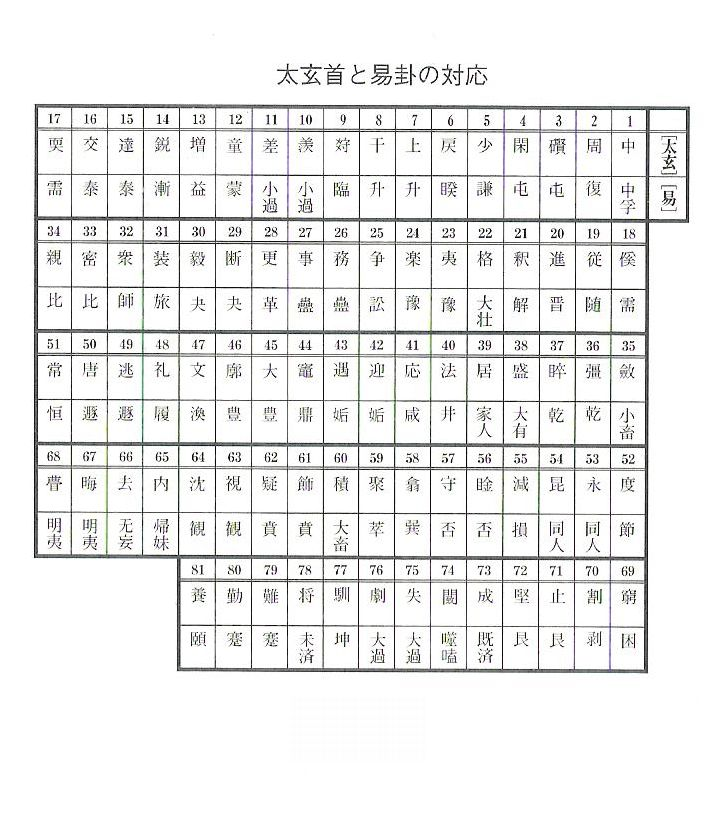
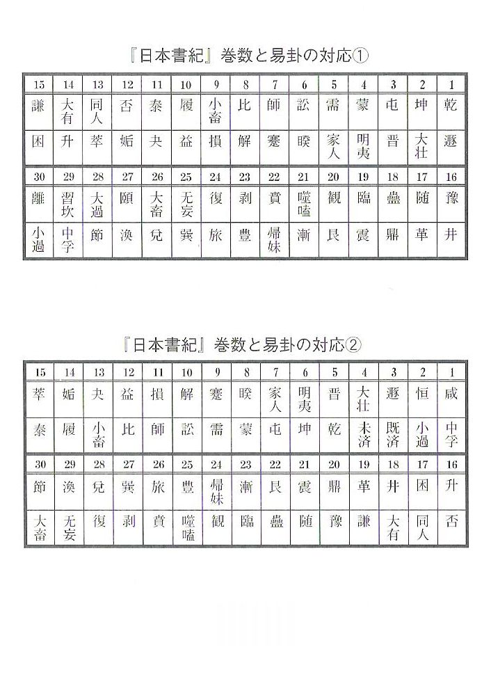

| 「古代史」の構造 | |
| 西孝二郎 | |
| NishiKojiro (2014) | |
「古代史」の構造
西 孝二郎
第一章 ヤマトはヤンマ島である
ヤマトと並ぶ日本国の総称であった「秋津島 」(『日本書紀』では秋津洲)。この名は、神武天皇が、腋上 の 嗛 間 の丘から見た国の形を、交尾する蜻蛉 に譬えたことに由来する、と『日本書紀』には記されている。
さて、そのアキツとはトンボのことであるが、トンボには、また、ヤンマ(大型のトンボの意)という呼び名もある。
トンボの意であるアキツは、ヤンマという言葉ともイコールであり、そうであれば、秋津島をヤンマ島と置き換えてみることも出来そうだ。
ヤンマ島 ......単純な置き換えによって得られるこの言葉は、「ヤマト」という言葉に極めて近い音を持っているではないか。
秋津島＝ヤンマ島＝ヤマト。
ヤンマ島という言葉を介すると、秋津島とヤマトという、日本を意味する二つの名称が一つに繋がることになる。
こういった連想が、古代の人々の脳裡で行なわれたのではないだろうか？
このような言葉遊びに類することを、歴史解釈に持ちこむのは馬鹿げたことだろうか？ 確かにこんなやり方は、ただそれだけでは、なんら解釈の決定的な根拠とはなり得ないにしても、「秋津島＝ヤンマ島＝ヤマト」は偶然にしては出来過ぎと感じられる。
明らかにヤマトはヤンマ島であり、それは秋津島に由来する言葉、あるいは、ヤマトがヤンマ島になり、そこから秋津島という言葉を生み出したのだろう。
※なお、『古事記』には、イザナギ・イザナミの生んだ大八島国の一つとして「大倭豊秋津島」という名称が出てくる(『日本書紀』では大日本豊秋津洲)。この名称における「倭」と「秋津島」は「ヤンマ島」という言葉を介して置き換えることの出来る、イコールの関係のものということになるが、それを裏付けるものとなるかもしれないのが、両者の前にそれぞれつけられた文字である。
倭には大が、秋津島には豊がついている。
大と豊......この両者も実はイコールなのである。というのも、『易経』には「豊」という卦があるが、その「豊」の彖伝には「豊は、大なり」とあるからである。
すなわち、大＝豊、倭＝ヤンマ島＝秋津島であり、「大倭」と「豊秋津島」はこれによって完全に一致するものとなる。
倭と秋津島という二つの国名の前にそれぞれ大と豊という文字がつけられているのは、大と豊がイコールの文字であることを利用して、その後に続く倭と秋津島もまたイコールのものであるということを暗示したもの、と考えることが出来るかもしれない。
記紀の編纂者が、易に精通しており、記紀の内容の記述の際にも、『易経』の言辞を極めて頻繁に活用していることは、第三章以降において詳述する。
第二章 邪馬壱という国名の意味
安倍晴明伝説の中には、ある和尚の前に千八人の女が現われたが、和尚は「千八人女」という字を組み合わせると、「倭」という字になることから、彼女らを倭国の神であろうと察した、という場面がある。
このような、文字を分解して読み、そこから意味を取り出す方法は、古来から日本人が好んでするところのもので、簡単なところでは、女を「くノ一」、松を「十八公」、米を「八十八」と読むような例が挙げられる。
そもそも、漢字というものは、それぞれに固有の意味をもつ複数の文字の組み合わせで成り立つものが非常に多いわけだから、逆にそれを分解して、そこから意味を取り出そうという試みが生じるのは、ごく自然なことであり、現代でもこのような手法はいささかも廃れてはいない。テレビのクイズ番組などにおいても、このような形の問題はしばしば見受けられるものである。
記紀の時代の出来事についても、このような視点で読むと、なかなか面白い場合がある。
たとえば、『古事記』における八俣大蛇の「八俣」は、「大和」に音が似ているのみならず、その文字の構成要素は、いずれも「大・イ・一・八・口」で全く同じであるということなどは、ちょっと注意を惹かれるところだ。
また、わが国の「日本」という名についても、この観点から一つの解釈を引き出せそうに思える。「日本」には文字通り、日の本という意味が込められているのは確実だろうけれど、文字を分解判断してみると「恒」という文字もそこに浮かび上がる。
「恒」の旧字は「恆」だが、それぞれの右の部分である亘と亙は、その字形が似ているところから、混同されることがしばしばであった、という事実をまず知っておこう。
そして、そうであれば、「恆」は、「小・一・日・一」という要素で成り立つと見做すことが出来る文字であるわけだが、「恆」から取り出せるこの要素を、別の形に組み合わせると、まさに、「日本」という文字が出来上がるのである。
恒（恆）＝「小・一・日・一」＝日本、である。
「恒」には、永久という意味があり、そのような意味が国名に込められたというのは、あり得ることではないだろうか。
しかも、「恒」は常と同義であるが、『日本書紀』神代巻においては、初めて生まれ出た神の名が、国常立尊と記されており、常(＝恒)は、日本の根源に位置している文字であることも分かる。
（※さらに言えば、「恒」には、弓張り月の意味があり、そこから、秦氏の祖とされる弓月君に結び付く。また、「恒」は『易経』の三十二番目の卦の名前でもあるところから、その三十二という数を、老子の『道徳経』に繋げてみるならば、それの第三十二章は「聖徳」というタイトルであったりする。すなわち、弓月＝「恒」＝三十二＝「聖徳」という図式が得られるのであり、「恒」は、日本にとって実に重要な意味を、いくつも引き出せる文字なのである。特に、「恒」に、月という意味があることは大きいと思う。日本という国名は、太陽の意を持ちながらも、「恒」を介して月という意味にも繋がっていくわけで、ここにおいて、太陽と月の結合という錬金術的観念の究極的表現が達成されていると見ることも出来るものだ。なお、インドの聖なる川、ガンジス河は、漢字で「恒河」と表記されるものであり、この辺の意味も意識されたかもしれない。）
*
文字を分解してみると、このように面白い解釈が引き出せる場合があるので、同じ視点を、『魏志倭人伝』にも持ち込んでみよう。
『魏志倭人伝』には、親魏倭王とも称される卑弥呼が「以婢千人自侍」、すなわち、千人の婢 を侍らせていた、と書かれている。
その数がいかにも多すぎると感じられる「婢千人」であるが、この「婢千人」こそは、分解判断によって、そこに別の意味が含まれていることが分かる文字なのである。
「婢千人」という文字は、「千・人・女・卑」という要素で成り立つが、これは、卑弥呼がその影響下にあると思われる魏の、その国名とほぼ同じものであることに気付かされる。
すなわち、魏という文字は、「千・人・女・鬼」という要素で成り立つものであり、これは「婢千人」とは、「鬼」と「卑」の部分が違っているだけなのである。
しかも、両者の唯一の違いであるその「鬼」と「卑」は、極めて近い字面を持った文字であるから、鬼を卑に置き換えてみるというような発想が、そこにあったのではないかと推測することが出来るものだ。
要するに、婢千人＝魏なのではないだろうか？
卑弥呼が婢千人を侍らせたのは、まさに「魏」という国名から発想されたものではないのか？
自らの親魏の心の表現として、「魏」と文字の構成の上でイコールになり得る「婢千人」という状況を、自分の傍に作り出したのではないだろうか。
こういう解釈は可能ではないか？
それとも、いくら字面が似ているとはいっても、卑と鬼の違いはやはり重大であると見做して、そんなことは偶然だと一蹴すべきだろうか？
しかし、たとえば、『万葉集』には、手師 (書家)であった王 羲之 の、その「羲之」という名を、「てし」という音を表わす文字として使っている場合があるが、その際、「羲之」の変わりに「義之」という文字を使っている。
印結而 我定義之 住吉乃 浜乃小松者 後毛吾松（巻三・三九四）
（標 結いて わが定めてし 住吉の 浜の小松は 後もわが松）
ここにおいても、字面の似ている文字への置き換えということが行なわれているのを見出すことが出来る。
この例は、卑弥呼の頃からは、かなり下った時代のものであるとはいえ、それでもやはり、古代という漢字使用の初期に属する日本人の、漢字に対する感覚、及び漢字の使用法の一端を示すものであり、そうであれば、卑弥呼の時代においても、やはり同様に、字面の似ている卑と鬼を通用させたというようなことが、ありそうなことに思えてくるのである。
（※「千人の婢」が、「魏」という意味であるならば、それは、晴明伝説において「千八人の女」が「倭」の意であるのと、全く同じ形だと言える。晴明伝説のほとんどは江戸時代に作られたものらしいとは言っても、それでも、そこにおける例は、現代のわれわれでもやるようなこんな漢字の扱いを、古くから日本人は好んで行なっていたということの証左となり得るものであり、漢字の扱い方におけるこのような特徴は、日本人に普遍的なものである、という認識を可能にするものである。そうであるならば、時間を究極にまで遡ってみて、卑弥呼の時代にもこのような特徴が発揮されていた、という推測を為しても、決して不当なこととは言えないだろう）
*
卑弥呼の「婢千人」からこのような解釈が可能になったからには、この『魏志倭人伝』における中心的な記述と言える「邪馬台(邪馬臺)」のその国名についても、同じ手法での解読が可能ではないか、と思われてくる。
ただし、邪馬台は、正確には「邪馬壱」である。『魏志倭人伝』においては、「邪馬壱(邪馬壹)」という表記になっているわけだから、それは邪馬台(邪馬臺)の誤記である、という定説に最初から従うのはやめて、まずは素直に「邪馬壱」と見做して解釈を試みよう。
先程の「婢千人」の解釈では、それが「魏」という国名と一致するということが分かった。そして、それは、魏との親交の表現として作り出された状況であるという解釈も可能であった。
そうであれば、「邪馬壱」という国名についても、やはり同様に、まずは魏との関わりという視点で、解読を試みたくなるものだが、すると、それほど考えを巡らすまでもなく、「曹」という文字に行き着くことが出来た。
魏は曹氏が支配した国であることから、曹魏とも呼ばれる。この曹という文字こそが、邪馬壱という国名のもとになったものではないか？ という解釈の可能性に行き当たったのである。
「曹」という文字は、「曲・日・一」という要素に分解可能なものである。
「曹」から得られるこの「曲・日・一」という三つの要素をしばらく見ているだけで、そこに邪馬壱という国名が浮かび上がってこないだろうか？
すなわち、
・曲......この字には邪の意がある。しかも、その邪の意を表わすときに「邪曲」という表現を用いることもあるくらいで、まさに、曲＝邪である。
・日......神話においては、西洋でも中国でも日輪を引くのは馬、すなわち、日＝馬である。また、隋の時代に書かれた『五行大義』には、馬の蹄は太陽をかたどったもの、という記述がある。『五行大義』は先秦から隋までの五行説を蒐集したものであるから、やはり古くから、中国的な観念では日＝馬なのである（しかも、馬は十二支では午に相当し、それは南の方位に置かれるものであるが、一方、日と言えば、易では離(火や日を意味する卦)に相当し、その離もやはり南に置かれるものであって、このような解釈からも日＝馬が浮かび上がってくる）。
・一......これは言うまでもなく、壱とイコールである。
このように、「曹」を分解して得られる「曲・日・一」は、「邪・馬・壱」に置きかえることが可能なものである。卑弥呼と魏（曹魏）の密接な関係ということを考え合わせると、この「曹」＝「邪馬壱」という解釈は、無視できないものになるのではないだろうか。
（※なお、「曹」を「曲・日・一」に分解するというこの仕方は、字解的に正しいわけではない。そもそも曹という字は省略体である。だが、そのような字解的な正しさというのを云々するのは、この場合無意味なことであろう）
*
もし、この「曹」＝「邪馬壱」という解釈が正しければ、『魏志倭人伝』の「邪馬壱」という表記は誤記ではないということになる。「邪馬壱」は卑弥呼が君臨した国の名を正しく表記したものであり、それは、魏の支配者であった曹氏のその姓から発想されたものであるということになるのだ。
邪馬壱は、魏との関係の中で、始めから漢字でつけられた国名である。したがって、この漢字名より先にヤマイ、またはヤマタイと発音するような国名がそこにあって、それを音写したものである、というものではないということになるのである。
もっとも、『魏志倭人伝』に登場する倭国の多くの地名や官名は、中国人が日本人から聞き取った発音を、それに近い音を持つ漢字で写したもの、すなわち音写の手法によって書かれていることは明白と思われる。
たとえば、マツウラという地名が、それに近い音の「末盧」として表記されるというような形である。
当時、日本に漢字はまだ全く普及してはいなかったのだから、日本の国名や官名や人名などが、現代の私たちのように、漢字によって表記されていたということはあり得なかったことであろう。従って、『魏志倭人伝』に出てくる名前も、基本的には全て、中国人によって音写されたものと考えてよいのに違いない。
だが、例外もあるということなのだろう。
ごく当たり前のことであるが、地名に限らず、もし描こうとする対象に、すでに漢字での名前が存在する場合には、もちろん、対象をその漢字名で表記するはずである。「邪馬壱」はまさにそういう例外なのではないだろうか。
魏の使者が最初にやってきたときには、まだ邪馬壱という漢字による国名はなかったかもしれないが、倭人伝の後半には、すでに邪馬壱国が魏と交流を結んでいる状況も記されている。魏は、交流のあったこの国に対して、漢字での名前をつけてやる、というようなことを考えついたのではなかったろうか。
あるいは、邪馬壱国側としても、漢字を使っている魏と交流がある国として、やはり、自分たちも同じ漢字を使って国の名前を表わしたい、と考えるのが自然ではなかっただろうか。
当時、日本人一般には漢字はまだまるで普及した形跡はないとはいっても、魏との交流を進めている国の支配者層においては、当然ながら、漢字の知識はそれなりにあったはずである。そこで、交流のある魏の国名を取り入れて、「邪馬壱」という国名、および「婢千人」という状況が作り出されたのであろう。
とはいえ、もちろん断定は出来ない解釈だ。倭人伝の中には邪馬国・伊邪国・斯馬国など、邪や馬という文字を使った国名が他にいくつも見られるのだから、邪馬壱もやはり単に音写された国名であるという可能性はあると思う。
しかし、邪馬壱が曹魏との関わりの中で登場してくる国であるということと合わせて考えるならば、曹＝邪馬壱という解釈は、やはり、捨てきれないものがあると感じられるのである。
なお、仮に、上の「曹＝邪馬壱」が正しいとして、また、邪馬壱(邪馬臺)がヤマトに変化したという説にも従い、これらと、前章の「ヤマト＝ヤンマ島＝秋津島」という解釈との整合性を追及するならば、次のような推理が可能かもしれない。
まず、邪馬壱という国名が音とは無関係に、曹という文字からの発想で作られた。
その後、邪馬壱は、中国の史書による誤記の影響などを受けて、邪馬臺と誤読されるようになり、ここから、ヤマトという音が生まれて、それが倭の読み方にもなった。
そして、そのヤマトという音は、日本が島国であることとも合わせて、ヤンマ島という言葉を呼び起こし、それが、ヤンマ＝アキツというところから、秋津島という国名を生み出した......。
第三章 記紀神世巻と『易経』
『古事記』の序文には、次のような一節がある......「臣 安 万侶 言さく、それ混元既に凝りしかども、気象未だ 效 れず、名も無く 為 も無く、誰かその形を知らむ。然れども、乾坤初めて分れて、参神造化の 首 と 作 り、陰陽ここに開けて、二霊群品の祖となりたまいき」
ここに見られる乾坤、および陰陽は、ともに『易経』に由来する言葉である。陰陽は易の基本的な観念であり、陽は 、陰は で表されるもので、この陽を三つ重ねて出来るのが天を意味する乾☰、また、陰を三つ重ねて出来るのが地を意味する坤☷である。
このように陰陽のいずれかを三つ組み合わせることで八種類の形が出来るが、それが易の八卦と言われるもので、乾・坤の他に震 ・巽 ・離 ・兌 ・坎 ・艮 の六つがある。これら八卦における陰陽の構成と主な意味は次の通り。
乾☰＝天・馬・頭・父・健・円
兌☱＝沢・羊・口・五～十五歳の女・悦・妾
離☲＝火・雉・目・十五～三十歳の女・麗・日・乾燥
震☳＝雷・竜・足・三十～四十歳の男・動・始め
巽☴＝風・鶏・股・三十～四十歳の女・入・木
坎☵＝水・豕・耳・十五～三十歳の男・陥・月・血
艮☶＝山・犬・手・五～十五歳の男・止・小石
坤☷＝地・牛・腹・母・順・布・釜
この八卦を掛け合わせると、八×八＝六十四卦が出来る。この六十四卦一つ一つについて詳しく述べたものが、いわゆる『易経』（『周易』）という書物である。
『古事記』序文には他にも、『易経』に由来すると思われる文がある。たとえば......「 乾符 を握りて 六合 を 総 べ、天統を得て 八荒 を 包 ねたまいき。二気の正しきに乗り、五行の序を 斉 へ、神理を設けて俗を奨め、 英 れたる風を敷きて国を弘めたまいき」 がそれである。
易の八卦は二つ組み合わされて六十四卦が出来るが、このうちの「乾」(八卦の乾を二つ重ねて出来る卦)について『易経』では......「大いなるかな 乾元 、万物 資 りて始む。すなわち天を 統 ぶ。雲行き雨施し、品物形を 流 く。大いに終始を明らかにし、六位時に成る。時に六龍に乗り、もって天を御す」 と述べており、この『易経』の文と、先の『古事記』の文には「乾・六・統べる」といった共通の要素が見られる。
さらに、「五行の序を斉へ」(古事記)と「大いに終始を明らかにし」(易経)はともに、順序を正しくするという同じ意味の文であり、また、易では、雨は陰陽(二気)の和合によって生ずるものとされているので、「二気の正しきに乗り」(古事記)と「雲行き雨施し」(易経)も、やはり相通じる文章なのだ。
しかも、『古事記』序文の中の「荒を包ねる」という表現も、易の「泰」の爻辞 に見られるものであり、従って、この『古事記』の文は、『易経』の辞をもとに創られている可能性が極めて高いと言えるものである。
*
また、大地は易でいえば坤にあたるが、坤は西南に置かれる卦で、その西南は十二支では未申である(次図）。
邇邇 芸 命 は猿田彦に導かれて九州の地に降り立ったのであるが、これは大地＝坤＝西南＝九州、及び、大地＝坤＝未申＝猿、ということであり、易卦の坤との関係で、九州や猿田彦という要素がここに登場するのであると考えられる。
ここにすでに易卦が一枚噛んでいることが分かる。
そこで、以下、神代巻における易の存在をさらにいくつか明らかにしていきたいと思う。
禊 ぎ
イザナギは死んだイザナミを追って黄泉の国へ赴いたが、そこが汚らわしいところであったので、黄泉の国から大急ぎで地上に戻ってきて、川で禊 ぎをした。そのとき、水で左の目を洗うと女神の天照大神(太陽)が生まれ、右の目を洗うと、男神の月読命(月)が生まれた、ということになっているが、この場面も、易の思想に基づいたものと考えられる。
まず、中国の思想では、東を左、西を右と見做している。そして、八卦の方位配当には後天八卦と先天八卦という二種類があって、そのうち先天八卦においては、東(左)は離(太陽の意)であり、西(右)は坎(月の意)である(次図)。

すなわち、易の思想を介することによって、左＝離＝太陽、右＝坎＝月ということが導き出せるのであり、それが、『古事記』のこの場面の根拠になったのだと言えるだろう。しかも、易では、太陽を意味する離という卦は陰、すなわち女性であり、月を意味する坎という卦は陽、すなわち男性であるとされているので、このことが、天照が女、月読が男として描かれることの理由であると思われる。
国生み
イザナギとイザナミの国生みの場面では、男(イザナギ)は左から、女は(イザナミ)は右から柱を回って出会い、そして、最初、女(イザナミ)の方から声をかけて交わった。すると、蛭子 が生まれてしまったが、これは女の方から声をかけたのが悪かったのだということが分かったので、二神はその蛭子を棄ててしまい、改めて、男の方から声をかけて交わると、今度は立派な子供が生まれた。
この場面を読むと、易に通じている人なら、すぐにある一つの卦を想起せざるを得ないだろう。それは易六十四卦のうちの一つである「帰妹 」という卦だ。この卦は、女から男に言い寄るという意味を持つ卦で、しかも、それは道理に反するものであるから凶であるとする卦である。
この国生みの場面には、この卦の意味が反映していることは間違いないだろう。それは次のことによって裏付けられる。
両者は交わる前に、男が左、女が右という位置に立ったのであるが、前述のように、左は東、右は西である。そして、後天八卦においては、東＝震、西＝兌である。
そして、易の八卦を二つ組み合わせると、八×八＝六十四の卦が出来るが、そのうち、この震と兌を組み合わせた卦は、兌下震上の「帰妹」と、震下兌上の「随」である(兌下震上とは下に兌、上に震という形の卦であり、震下兌上とはその逆で、震が下、兌が上になっている形という意味である)。
すなわち、左(東＝震)と右(西＝兌)を交わらせると、一つには「帰妹」という卦が形成されるのであり、それが、この国生みの場面において「帰妹」に一致する内容が描かれていることの理由なのであろう。
そうすると、改めて行なった交合は、声をかける順序をさっきとは逆にしたということから、「帰妹」と同様に東と西の組み合わせではあるが、しかし、「帰妹」とは上下が逆である「随」に基づいて描かれた場面であることが推測されるが、確かにそのように解釈できそうだ。
なぜなら、「随」三爻 には「丈夫に係れば、小子を失う」（立派な人に随い、小人を捨てる）とあるのだが、これは先に生まれた蛭子(小子)を捨てることによって、後に立派な子(丈夫)を生んだということに通じる文であるからだ。
しかも、このイザナギ・イザナミ両者による国生みによっては、八つの島(大八島)が出来たのであるが、この八という数も、実は「随」に関わるものなのである。
『春秋左氏伝』(以下『左伝』と略記)の中には、登場人物が易占を行なう場面がいくつかあり、その中に、穆姜 という女性が筮 を立てたときに、「艮が八に之 く」という卦を得た、というものがある。
易占では、六つの爻の陰陽の組み合わせで、まず「本卦」というものが成り立ち、さらにその六つの爻のうち、老陽、または老陰にあたる部分を変爻と言って、老陽は陽がすでに老いているからまもなく陰に変わり、老陰は陰がすでに老いているから、まもなく陽に変わると判断する。
そして、本卦の六爻のうちに、老陽があればそれを陰に、老陰があればそれを陽に、それぞれ変化させた形によって出来る卦を「之卦 」と呼び、本卦が現在や近い将来のことを表わしているのに対して、之卦は遠い将来的な運命を表わすとするのである。
すなわち、『左伝』の穆姜が得た「艮が八に之く」という占筮の結果は、本卦が艮であり、之卦が八であったという訳だ。
しかし、易六十四卦の中には「八」などという卦は存在しない。一体、「八」とはなんなのか？
八が何を意味するのか現在でもよく分かっていない。しかし、『左伝』のこの場面では、「艮が八に之く」というこの占筮の結果を、「艮が随に之く」のことであるとして、説明が行なわれていくのである。
なぜ、ここでの「八」が「随」なのか、「随」がなぜここでは「八」と表現されているのか、その理由は不明であるものの、ともかく、ここにおいては、「随」＝「八」なのであり、『左伝』のこの場面についての知識がある者においては、「随」＝「八」という観念が成立していることとなる(もちろん、『左伝』の知識がなくても、そもそも「随」を八と表現するような理由が古代にはあったのかもしれないが)。
すなわち、八という数は易の「随」に結び付く数なのであり、イザナギ・イザナミが生んだ主要な島の数が八であるということも、この場面が「随」であることの根拠となるものである。
イザナギ・イザナミ両者は、左右(東西)の結合という構図によって「随」と合致するだけでなく、八つの島を生んだという点でも「随」と結び付く存在なのである。
このように、東西の結合した形を持つ「随」が、日本に深く関わっているということは、日本が記紀の中でも、しばしば東西に分けて考えられる、という点からも妥当なものと感じられてくる。
東日本と西日本を結合させた統一体としての日本を表現したいという意図が、東西結合の形を持つ「随」を取り入れて描く、ということに繋がったのではないだろうか。
また、そもそも「随」が持っているこの東西の結合という形は、思想的にも非常に重要な意味を持っている。
古代中国には煉丹術というものがあり、それは西洋の錬金術と言い得るものである。いずれも、それによって取り出すものは万能薬、不老不死の薬として表現されるものであるが、この中国の煉丹術において、究極の成果である丹薬、すなわち不老不死の薬を取り出す方法というのが、まさに東西を結合させるということなのである。
従って、日本神話の中の国生みという非常に重要な場面で、「随」として解釈できる場面があることについては、「随」の持っている東西の結合という形を介して、実はこの煉丹術の成果というものを表現しようとしているのではないか、と推測することも出来るのである。
それによって、この日本という国に、丹の持つ永遠・不老不死という性質を付与しようとしたのではないだろうか？
八という数は、八柱の神など『日本書紀』において、もっとも多く登場する聖数である。それら八の頻出も、やはり「随」に繋がり、そこから、東西の結合で得られる煉丹術の
成果に繋がっていくものなのではないだろうか。
日本が「随」と深く関わっていることは、日本の大地が葦原瑞穂の国と表現される場合もあり、この瑞という文字が、「随」と同音であるということも、さらなる裏付けとなり得るものかもしれない。
（※なお、イザナギ・イザナミ両者は、大八島国の後に六つの島を生み、さらに、神々を生んだが、その合計数は、「十四島・三十五神」と記される。この十四と三十五という数も、易に結び付けてみると興味深い。というのも、易十四番目の「大有」は天上の太陽、易三十五番目の「晋」は地上の太陽を、それぞれ意味するものであるからだ。いずれの卦も、空に昇った太陽という象意を持つ卦であり、これによって、日本の国土も神々も太陽と結び付くということになるわけだが、このことは、わが国の国名が日本である、ということと合わせて考えるならば、決して偶然ではなく、意図的に為されたことだと思われる）
須佐之男命
妻イザナミを追って黄泉の国へ行ったイザナギは、地上へ逃げ帰ってきて、すぐに川に入って身禊ぎをしたが、そのとき、左の目を洗うと天照大御神が生まれ、右の目を洗うと月読命が生まれた。さらに、鼻を洗うと須佐之男命が生まれた。
イザナギは喜び、天照には高天原を、月読には夜の食国を支配せよと命じ、須佐之男には海原を支配せよと言った。しかし、須佐之男は従わず、髭が胸元にまで伸びる頃になってもまだ泣き喚いていた。
イザナギが理由を尋ねると、須佐之男は「妣 (母)の国である根の堅州国 に行きたい」と答えたので、イザナギは須佐之男を追い払ったのであった。
だが、須佐之男はまず天照大御神のいる高天原に暇乞いに行き、そこで大暴れした。機織り場には馬を投げ入れたので、驚いた機織り女は梭 で陰部を突いて死んでしまった。
そのため、天照大御神は恐れて、天の岩戸の中に隠れてしまったので、世界は真っ暗になってしまった。困った神々は集まって、天照を岩戸から引き出すための方策を考えた末、天照の注意を引くために、皆で楽しく遊び騒いだのである。
何事かと思った天照が、戸を少し開いて外を見てみると、すかさず手力男 神が天照を外へ引き出し、布刀 玉 命は天照が出た後の岩戸の前に綱を張って、天照が再び岩戸の奥へ入れないようにした。
世界に再び光が戻り、須佐之男は高天原から追い払われた。
須佐之男は下界に降り、八俣の大蛇を退治して櫛名田姫と結婚し、出雲の須賀に安住の地を得たのであった。
さて、右にあるように、須佐之男命は、出雲の国の須賀というところに最終的に落ち着いたのであるが、須佐之男と須賀のいずれにも含まれている須という文字からは、易の「需 」という卦を想起させられる。というのも、「需」彖伝には「需は須なり」とあるからであり、ここにおいて、須賀の須佐之男と「需」の結び付きは、極めて明瞭である。
そしてさらに、「需」はその象伝に「雲、天に上るは需なり」とある。この「雲が天に上る」とは、すなわち、雲が出るということであるから、出雲という地名に結び付く。しかも、須佐之男が、初めて須賀の宮を作った時、その地より雲が立ち上った、という『古事記』における記述も、この「需」象伝に合致するものである。
おまけに、須佐之男は八俣大蛇を退治した際、大蛇の尾から草薙剣を見つけたが、『日本書紀』では、それを天 叢雲剣 とも言っており、この天叢雲もやはり、「需」の「雲が天に上る」という象意とぴたり一致するものだ。
従って、出雲の須佐之男命は、この「需」と極めて深い関わりがあるということが、明確に分かるのである。
また、須佐之男命は泣いてばかりいて、髭が胸にまで伸びた頃になってもまだ泣き続けていた、とも述べられているが、この表現が、また、「需」に結び付くのである。
というのも、「需」という文字を分解すると雨と而になるが、雨は涙に置き換えられるし、而はそもそも髭の形から出来た文字であり、「需」はまさに涙と髭という組み合わせの文字として見ることが出来るものだからだ。
「需」はまさしく、泣いてばかりいる髭面の須佐之男とぴたり一致する文字なのである。
さらに、次のことも須佐之男＝「需」の根拠となる。
それは彼が、高天原の天照のもとに行った後の場面である。彼は天照のもとを去った後、すぐに大 気都 姫に食物を乞うている。これは、「需」象伝の「君子もって飲食宴楽す」に基づいた場面であると考えられないだろうか。
「需」については、序卦伝にも「需は飲食の道なり」とあり、「需」は食事と関わりの深い卦なのであって、高天原での天照との対立と、出雲での八俣大蛇退治という二つの大きな場面の間に挟まれた、ほとんど何の意味もないとさえ思われる短い食事の場面も、実はやはり、この「需」との関係を示すものなのだ、と解釈することができそうである。
ところで、「需」は乾下坎上、天を意味する乾が下にあり、水や雲を意味する坎が上にある、という形の卦であるところから、雲（坎）が天（乾）に昇る、という象意の卦とされるのであるが、坎には、また月という意味もある（説卦伝に「坎を月と為す」とある）ので、「需」の乾下坎上という構造は、天に昇った月、という象意を示すものともなる。
ということは、「需」の具体化であることが確実な須佐之男は、天上の月を意味するものともなり、月読命とその存在がだぶってしまうことになる。
しかも、天上の月という象意を持つこの「需」には、前述のように「食」という意味もあるのだから、夜の食国に赴いた月読命も、ものの見事に「需」に合致する存在なのであって、須佐之男と月読命は、いずれも「需」という同一の基盤の上に成り立つ神、ということになってくるわけだ。
さらに言えば、須佐之男は、黄泉の国の住人である母のもとに行きたいと言ったのであったが、一方、月読命の読はヨミという音で、やはり黄泉と結び付くわけで、ここにおいても両者は符合する。
従って、須佐之男と月読命は完全に一つに重なってしまう存在であり、ここから、やはり須佐之男を月として解釈することが、妥当になってくると思えるのだった。
要するに、女は太陽、男は月、ということではないのだろうか？
ともあれ、須佐之男像の基盤をなしている「需」は、天上の月という意味でもあり、そうであれば、須佐之男が暴れたために、天照が一時姿を消したというのは、単に、夜が来たので太陽が姿を隠した、ということを意味するものと捉えることが可能になってくるわけである。
それでは、次に、その太陽たる天照大御神についても、その易との関わりを明らかにしたいと思う。
天照大御神
前述のように、高天原において天照と須佐之男は対立したのだが、両者の対立の場面では、天照は一度、天の岩戸の奥に隠れ、その後、再び姿を現したのであった。
この時、岩戸の中に閉じ篭もった天照を誘い出そうとして集まった神々は、どういうわけか皆で遊び楽しんだのであり、そして、天照が岩戸から出てきた後には、布刀玉 という神が、その岩戸の前に綱を張って天照がもとに戻れないようにしたのであった。
この天の岩戸を舞台とした場面には、「豫 」という卦が、実に明瞭に現われている。「豫」には、遊び楽しむ、怠る、あらかじめ等という意味があり、その四爻には「由 りて豫す」（皆が集って楽しむ）とあるのだが、天照を誘い出そうとして集まった神々が遊び楽しんだ様子は、まさにこれである。
そして、天照を岩戸の中から引き出した際、布刀玉という神が重要な役割を果たしたのであるが、この布刀玉が次のようにして「豫」と結び付く。
「布刀玉」の刀と玉は東方の守護神である持国天の持ち物でもあるので、東の卦である震に置き換えることができる。また、説卦伝に「坤を布と為す」とあるので、布は坤である。したがって、布刀玉は震と坤の組み合わせであるから、やはり震と坤の組み合わせの「豫」(坤下震上)と符合することになる。
もっとも、震と坤の組み合わせで出来るものとしては、もう一つ「復」(震下坤上)という卦がある。これは、もちろん天照の復活という場面にぴったりの卦なので、布刀玉にはこの「復」という意味もあるであろう。
だが、とにかくこの場面全体としては、神々が集って遊び楽しむという記述と合わせて「豫」との一致が明らかなのである。
他にも、須佐之男が高天原で暴れ、機殿に馬を投げ入れた時、驚いた機織り女が、梭 で陰部を突いて死んでしまった、とあるのも「豫」に結び付く。というのも、豫は予とも表記されるものであり、この予という字は、まさしく機織りの梭の象形文字から出来たものだからである。
さらに、次の一致は、かなり決定的なものと言えるものである。
易の十翼の一つである繋辞下伝には、「門を重ね、柝 を撃ち、以て暴客を待つ。蓋 しこれを豫に取る」という文がある。この文の意味は、門を厳重に閉ざし、拍子木(柝)を叩いて、暴客の侵入を防ぐようにしたのは、「豫」からの発想である、というものである。
なぜ、「豫」からそのような発想が出てくるかというのは、次の通り。
「豫」は坤下震上であるが、坤には門を閉ざすという意味があり(繋辞上伝に「戸を閉ずる、これを坤という」とある)、震は雷なので荒々しい客＝暴客と見做すことが出来る。また、豫という字にはあらかじめという意味もあるので、「豫」から得られるこれらの意味を総合すると、「門を厳重に塞いであらかじめ拍子木を叩くなどして暴客に備える」という意味が取り出せる、というわけである。
ここにおける、「門を閉ざして中に閉じ篭もり、暴客の侵入を防ぐ」という「豫」の意味は、須佐之男という暴客と岩戸の中に閉じ篭もった天照の様子に完璧に合致するものである。
このことによって、天の岩戸を舞台とする場面が「豫」に立脚しているという解釈は、ますます確かなものになってくるのである。
では、なぜ高天原での天照を描いた場面が「豫」に立脚しているのであろうか。
それについては、まず、「豫」には楽という意味があり、『五行大義』において「楽は明なり」と述べられていることが根拠になっていると考えることが出来るかもしれない。すなわち、「豫」＝楽＝明であるから、まさしく明である天照は「豫」であるというわけだ。
あるいは、次のような理由もあるかもしれない。
「豫」の左半分である予は余という字に置き換えることが出来る。なぜなら、予と余は同音であるうえに、我という意味で同義でもあるからだ。そして、その余という字は訓読すると「あま(り)」であるから、この読みによって天という字に通じる。天もやはり「あま」だからである。すなわち、予＝余＝天、である。
一方、「豫」の右半分である象は、ショウという読みだから、照に通じる、すなわち、象＝ショウ＝照、である。
ここから、豫＝天照ということになる......。
いや、しかし、やはり「豫」と天照の結び付きの根拠として、次のことを、まず第一に挙げなければならないのかもしれない。
豫はヨという読みであり、また、予と表記した場合、私という意味がある文字だが、これと全く同様に、余という字もヨという読みであり、私という意味を持っている。
ここから、「豫」に立脚して描かれた天照にまつわる場面の背後には、実は、この余という文字が潜んでいるのではないか？ と考えられてくる。
余は百済王家の姓であり、日本の天皇家は、まさにこの百済王家と密接な関わりがあることが、『日本書紀』からも読み取れるわけだから、この解釈はとても重要なものになってくると思えるのである。
しかも、『古事記』には、伊豫国を伊余国と表記している箇所がある。まさにここに、豫は余である、ということが暗示されているのではないだろうか。
天照に関わる場面が「豫」と一致している様は、先に挙げたもの以外にも、次の点にも見出すことが出来る。
スサノオを追い出して後、天照は、葦原の中つ国を自分の子が治めるべき国であるとして、使いをやって平定したのであるが、この葦原を足腹に置き換えて考えると、易の説卦伝には、「震を足と為す」「坤を腹と為す」とあるので、足腹＝葦原はまさに坤下震上の「豫」と一致する構造を持った言葉と解釈できるようになる。
葦原という言葉が、右のように、「豫」を表現したものであるかもしれないことは、次のことから裏書きされないだろうか？
たとえば、葦原の中つ国平定のために天照が遣わした使者、天 菩比 神と天 若 日子 が、いずれも役目を怠るわけであるが、「豫」には、まさに、怠るという意味もあるのだから、それらの場面も、やはり、「豫」に関わってくると言える。
また、天若日子の話のすぐ後には、阿遅志貴 高 日子 根 神の妹が詠んだ歌を「夷振 」と呼んだとあるが、この表現がやはり「豫」を示すものと思える。
なぜなら、易に擬して作られた『太玄 経』という書において、「豫」は、「楽」および「夷」という首に相当するものだからである(次図)。

葦原の中つ国との関わりでも、このように、「豫」の意に合致すると思われる場面がいくつも見出せるのであり、そうであれば、葦原という言葉もやはり、前述のような、「豫」からの連想で作られた可能性が高まると思える。
このような解釈が可能になってくると、「豫」は、天照のみに関わるものでなく、この日本という国の全体に、その卦の意味が反映しているものだと感じられてくる。
実際、「豫」が関わっているのは神話の部分だけではない。
この「豫」という卦は、前述の通り、『太玄経』において「楽」「夷」という首に対応している。また、太玄の首を解説した『衝』『錯』という文においては、「夷は平なり」ともされている。
「楽」「夷」「平」......「豫」から引き出せるこれらの文字は、古代の日本になんと関わりの深いものであろうか。
那楽・平安・平城・夷(蝦夷)など、良い方にも悪い方にも、重要なところには、「豫」に繋がる文字ばかりが並んでいるのである。
明らかに、古代日本には、「豫」の観念が潜んでおり、それは、先に述べた理由とともに、「豫」が楽しむという意味で、占いにおいても吉卦とされるものであることも、大きな理由であると思われる。
（※なお、天照が天岩戸の奥に隠れ、光が失われてしまう場面については、まず、易の三十六番目の卦である「明夷」を想起すべきものでもある。というのも、「明夷」は離下坤上、明を意味する離が、地を意味する坤の下にあるところから、明が夷 れる(傷つく)の意を持つ卦だからである。
しかも、「明夷」二爻は「明夷 る。左股を夷る。もって拯 うに馬壮 んなれば吉」というもので、これは、スサノオが暴れ馬を投げ込んだために、機織り女が梭でほとを突いた、という場面を想起させずにはおかないものである。この場面は、おそらく、この「明夷」二爻より着想を得たものと思われる。
だが、この「明夷」も、結局は、「豫」に収斂していくものなのである。というのも、『太玄経』において、易の「豫」に相当するのは「楽」と「夷」という二つの首であるが、『五行大義』には「楽は明なり」とあるから、「楽」「夷」＝「明夷」となっていくからである。
要するに、「豫」は『太玄経』と『五行大義』の記述を介することによって、「明夷」と結び付く卦なのであるから、天照の岩戸隠れという「明夷」に合致する状況は、やはり「豫」である、と言えるようになってくるのだ。
このように「豫」＝「明夷」という図式がある以上、もちろん、「豫」と解釈できる天岩戸の場面は、実は「明夷」を表わしたもの、という可能性もここに浮上してくるわけである。
天照といえば、一種の女帝であることと、一度消えた後に復活するという点で、皇極天皇を想起させるものである。皇極もまた、女帝であり、一度皇位を退いた後に、再び斉明として復活している。この共通点に着目して、両者を重ね合わせてみるならば、天照が岩戸の奥に消えていた際に高天原を乗っ取っていた須佐之男と、皇極が斉明として再び即位するまでの間に皇位にあった孝徳が、やはり重なってくるということが言えるわけだが、天照という女帝が消えていた場面は、前述のように易の三十六番目の「明夷」に結び付き、一方、皇極（斉明）という女帝が消えていたのは、第三十六代の孝徳天皇の時であり、ここに三十六という数字の一致が見られる。
すなわち、須佐之男が暴れて天照が消えてしまう場面＝「明夷」＝三十六＝孝徳という図式がここにあるわけで、ここから、天照＝皇極・斉明という解釈がやはり可能になってくる。）
第四章 歴代天皇と易卦の対応
第十二代の天皇は景行天皇である。『古事記』の景行天皇条には、小碓 命 (倭 建 命 )が、兄の大碓 命 を殺してしまうという場面があるが、ここからは、易の「否」という卦を想起させられる。
というのも、「否」の卦辞には「大往き小来 る」（小が隆盛となって大が衰える）とあるからだ。小碓が大碓を殺すという構図は明らかに、この「否」の卦辞と一致している。
しかも、「否」は、『易経』の十二番目の卦である。小碓命が大碓命を殺してしまうのが第十二代天皇の条であることと数字の上でも一致している。
ここから、記紀に描かれた歴代の天皇は『易経』の卦と対応関係にあるという可能性が浮上してくる。すなわち、『古事記』歴代天皇巻の第一代から第三十三代までの天皇は、『易経』の一番目から三十三番目までの卦と対応関係にあるのではないか（あるいは、『日本書紀』の第一代から第四十代までの天皇は、『易経』の一番目から四十番目の卦と対応関係にあるのではないか）、という推測が可能になってくるのである。
そして、この推測はかなり容易に裏書された。
たとえば、『易経』二十二番目の「賁 」の上爻 には「白く賁 る」とあるが、第二十二代天皇の清寧は生まれたときから白髪であったとされる人物であり、ここには白という明確な一致が見られる。
さらに、『易経』三十番目の「離」は火・日・光などを意味する卦であるが、第三十代天皇の敏達紀においては、身体から火のような光を発する日羅という人物が主役のような描かれ方をしており、ここにおいても、両者の一致は極めて明白である。
やはり、記紀の天皇と易卦は対応を為しているのだ。
ただし、詳細に見ていくと、天皇と易卦の対応は、ただ一通りだけあるのではなく、一人の天皇に四つの卦が対応しているという形であることがわかってくる。これについては、拙著『記紀と易経』の中で詳しく論じているが、ここでは、この対応が確実に存在するものであることを理解してもらうために、第十二代天皇と易十二番目、第二十代天皇と易二十番目といったような、同じ位置にあるもの同士での対応についてのみ、以下に簡略に述べてみたいと思う。
*
『易経』一番目は「乾」で、これは、天や空を意味する卦である。
一方、第一代天皇は神武。神武紀の最後には「饒速日 命は、天の磐船 に乗って大空を翔り行き、この国を見て降ったので、ここを名付けて、虚空 見つ日本の国、という」という記述があり、ここに、天や空を意味する「乾」が明瞭に現われている。
また、大空を飛び回ったというありそうもないことも、「乾」の五爻 「飛龍、天にあり」から発想されたものと考えられる。
『易経』十二番目は「否」で、その卦辞には「大往き小来 る」（小が隆盛となって大が衰える）とある。
一方、第十二代の天皇は景行天皇であるが、『古事記』景行条には、小碓 命 (倭 建 命 )が、兄の大碓 命 を殺してしまうという場面があり、これは「否」の卦辞に符合する、というのは前述の通りである。
『易経』十四番目は「大有 」(☲☰)であり、この卦は五爻(下から五番目)に陰が一つだけあって、後は全て陽である。易では、主に五爻を卦主と呼んで君主の位としているので、この五爻に一つだけ陰のある「大有」は、「陰の君主が衆陽を率いる」形であり、この「陰の君主」は転じて、暗君とか女帝のことを表わしているとも解釈されているものである。
一方、第十四代天皇は仲哀で、彼は神意を侮る愚かな暗君としてすぐに死んでしまい、その後には、后の神功皇后が実質的には女帝として活躍する場面が描かれており、この暗君・女帝という要素は、まさに「大有」と合致するものてある。
『易経』十五番目は「謙」であり、これは文字通り謙遜・謙譲を意味する卦。また、雑卦伝には「謙は軽なり」とあり、軽という意味の卦でもある。
一方、第十五代天皇は応神で、『古事記』応神条には、応神の二人の息子が皇位を譲り合うという、まさに謙譲の様子が描かれており、これが「謙」の意にぴたりと合致している。
また、応神は都を明 宮 に置いたが、この明宮は軽島というところにあると『古事記』には記されているので、この「軽」という点でも、応神は「謙」と合致している。
『易経』二十番目の「観」は、観るということを意味する卦で目に関わるもの。そして、その初爻には「童観」とあり、これは、子どもの愚かしい見方、という意味である。
一方、第二十代天皇は安康で、『古事記』安康条には、子どもの目弱王が安康天皇を殺してしまうという場面があるが、この「子ども・目弱」という要素は、「観」、及びその初爻の意を想起させずにはおかないものである。
『易経』二十一番目は「噬嗑 」で、その卦辞には「獄を用 うるによろし」（刑罰で人を罰するのによい）とある。
一方、第二十一代天皇は雄略で、彼はやたらと人を罰する恐ろしい天皇として描かれており、これは、まさに「噬嗑」の意に合致するものである。
『易経』二十二番目は「賁 」で、その上爻には「白く賁 る」とあるが、上爻は一番上の爻であるところから、人体に当てはめれば頭に相当するとされるところなので、「賁」上爻の「白く賁る」からは、白と頭という要素が取り出せ、ここから白髪という連想が可能なものである。また、「賁」四爻にある「皤如 」も、もともとは老人の白髪を意味する言葉である。
一方、第二十二代天皇の清寧は、生まれたときから白髪であったとされる人物で、諡号も白髪武広国押稚日本根子天皇という。
『易経』二十六番目は「大畜」で、その彖伝には「剛上りて賢を尚 ぶ」とあり、これは、君主が賢者を尊ぶという意味である。
一方、第二十六代天皇は継体。継体紀には、継体天皇の人となりについて「人を愛し賢人を敬った」とあり、さらに、継体自身の口からも再三、賢者を尊ぶ発言が為される。これらは「賢を尚ぶ」という「大畜」の意に立脚した記述であるのは間違いない。
さらに、「大畜」は、象伝に「山中に天あり」とある。
継体天皇は、都を山城に移したが、山城の天皇という構図は、この「山中に天あり」という「大畜」の象意に合致している。
『易経』三十番目の「離」は、火・日・光などを意味し、繋辞伝には、網の形を持つ卦であるともされている卦である。
一方、第三十代天皇は敏達。敏達紀においては、百済からやってきた日羅 という名の人物が主役のような描かれ方をしているが、この日羅という名前が「離」そのものである。なぜなら、日はまさしく「離」の意味の一つであり、また、羅は網という意味も有する文字であって、この意もまた「離」に属するものだからだ。
しかも、日羅については、身体から火のような光を発していたとも記されているのであり、この火のような光というのも、まさしく「離」の意に合致するもの。
日羅が、易の「離」の意を担った存在として描かれた者であることは確実である。
『易経』三十三番目の「遯 」は、遯 れる(逃れる)、隠遯(隠遁)するという意味を持つ卦である。
一方、第三十三代天皇の推古は、聖徳太子を摂政にして、自らを不執政の立場に置いたのだが、これは一種の隠遁であり、「遯」の意に合致するものだと言えそうである。
また、『易経』に擬して作られ、易の六十四卦に対応する八十一の首(卦に相当)で構成される『太玄経』という書において、易の「遯」に相当しているのは、「唐」という名の首である。
第三十三代の推古の時代には、中国は、まさに唐の時代に入るのであるが、三十三＝「遯」＝「唐」という、易と太玄によって得られるこの図式から、『日本書紀』の作者は、唐の始まりを第三十三代の天皇の巻に置いたのであろう。
『易経』三十四番目は「大壮 」で、その彖伝には「大なる者、壮 んなり」とあり、これは、大が隆盛となるという意味である。
一方、第三十四代天皇は舒明。舒明天皇が即位してからの記事はそう多くなく、大きな事件もあまりない。その中で目を引くのが、「大宮と大寺を作った」という記事である。これはまさに「大」そのものであり、「大壮」の意を意識した記述と考えることが出来る。
しかも、他にも、この舒明紀の少ない記録の中には、「大」という文字がやたらと目立つ。たとえば、天皇崩御後の殯 を百済の大殯といったとか、大 派 王 が蘇我蝦夷に進言を行なったとか、書 直 県 を以て大 匠 としたとか、大仁 という位の二人を大唐に遣わしたなどなど。それらはやはり大が壮んになるという「大壮」の意に合致させた記述であると解釈することが出来るだろう。
『易経』三十五番目は「晋」で、その四爻には「晋如 たる 鼫 鼠 、貞 しけれども厲 し」とあるが、この文は、岩波文庫の『易経』(高田真治・後藤基巳 訳)では、次のように解釈されている......「不当にも君位に近い高官の地位に進んで、下賢の上進を忌み、邪暴の振舞いにおよぶことは、貪欲な 鼫 鼠 (大きな鼠の意)にも似ている。いかに貞正であろうとしても危険である」......もちろん、この「晋」四爻については、古来から、このような解釈が為されているものである。
一方、第三十五代天皇は皇極。皇極紀では、蘇我入鹿が山背大兄王を襲うという事件が起こるが、その際、古人大兄が入鹿を止めて、「鼠は穴に隠れて生きているが、穴を失ったら死なねばならぬ」と言ったのだった。
この鼠云々の意味はよくわからないが、鼠が入鹿を指していることは明らかであり、この鼠はまさに、右に引いた「晋」四爻に登場するものである。
そして、入鹿のこの行動については、「山背大兄王ら上宮王家の威名が天下に上ることを忌んで、おのれ一人君主に匹敵しようと考えて、この暴虐に及んだ」と記されているが、これはまさに、「晋」四爻の意そのものである。
ここから、入鹿の暴虐ぶりは、「晋」四爻に立脚して描かれた創作であることが確実なものとなる。
『易経』三十九番目は「蹇 」で、その彖伝には「蹇は難なり」とある。すなわち、「蹇」＝「難」なのである。
一方、第三十九代天皇は天武。天武紀においては、この「難」という字を含む難波という地名が何度も出てくる。しかも、十一年九月二日条には「難波朝廷の時の立札を用いることとする」という勅があり、十二年十二月十七日条には「都城や宮室は一ヶ所だけでなく、ニ、三ヶ所あるべきである。よってまず難波に都を造ろうと思う」という詔があって、いずれも難波に重要な位置が与えられている。従って、この難波を「蹇」の表現と見做してよいと思う。
もっとも、この難波という地名が重要な意味を持つ巻としては、さらに推古紀と孝徳紀が挙げられる。推古紀においても、難波という人名・地名が頻出し、孝徳紀においては、難波に都が置かれたことになっている。
従って、天武紀における「難波」は、天武紀に特徴的な要素ではないと思われるから、それを「蹇」の表現と見做すのはどうかと考える人もいるだろう。
だが、前述のように、天皇それぞれに対応する卦は一つではないのである。全部で四つの卦が一人の天皇に対応しているのだが、その複数の対応において、推古紀にはまさに、「蹇」が当てはまっており、そこでの「難波」もやはり、「蹇」の表現なのである。
また、孝徳紀についても、そこに対応する卦の一つである「明夷 」がやはり「難」という意味を持っており、ここでの「難波」も、易卦との関係で登場する地名だと解釈することが可能なものである。
以上のように、歴代の天皇に関する記述が、同じ数で対応する易卦をもとに創られている部分があることは、非常に明らかなのである。
そもそも、第一代の神武、この「神武」という名が、易とはとても深い関わりを持ったものなのだ。
というのも、易の繋辞上伝には、「易の徳に与る者は、神武にして殺さざる者である」とあるからだ。
すなわち、神武という名にはまさに、易の徳に与る者という意があるのであって、このような名前を日本の初代天皇に用いることによって、日本の歴代の天皇が、易と密接な関わりを持っていることを暗示したものにもなっているのである（漢字二文字の諡号が記紀編纂当初からあったという前提で解釈する。以降も同様である）。
*
ところで、易卦は天皇一人一人と対応するだけでなく、『日本書紀』の一つ一つの巻と対応するという関係もある。
すなわち、『日本書紀』第一巻には、易一番目の「乾」、第二巻には易二番目の「坤」......、という対応である。
その対応の様子が非常に明らかである箇所を挙げるならば、たとえば、次のようなものがある。
・『易経』十五番目は「謙」で、これは謙遜・謙譲を意味する卦だが、一方、『日本書紀』第十五巻の主役といえば、弘計・億計兄弟で、彼らはまさに、その謙遜・謙譲の徳を褒め称えられる人物たちである。
・『易経』二十二番目は「賁」であり、これは飾りということを意味する卦だが、『日本書紀』第二十二巻の推古紀には、まさにこの飾りという意味の言葉が頻出し、それは、他巻には見られない、この巻だけに特徴的な記述となっている。
この二つの例を見るだけでも、易卦と『日本書紀』の巻数が対応を為していることは、明白と感じられるのである。
なお、この巻数と易卦の対応も、一つの巻に四つの卦が対応するという形になっている（次図）。

右図の対応①は、易経上巻（周易上経）一番目の「乾」から始まる対応が二巡する形。対応②は、易経下巻（周易下経）一番目の「咸」から始まる対応が二巡する形である。この四つの対応のうち、その対応の様子が極めて明白である部分を挙げてみよう。
・『日本書紀』第二十四巻(皇極紀)に対応する卦の一つに「旅」があり、その「旅」の上爻は「鳥、その巣を焼かる」というものであるが、第二十四巻では、斑鳩宮が焼かれるという事件が起こるのであり、これがまさに「旅」の「鳥、その巣を焼かる」そのものである。言うまでもなく、斑鳩は鳥の名前である。
・『日本書紀』第二十三巻(舒明紀)には「豊」という卦が対応しているが、この第二十三巻には、まさに、豊という人物が来日したという記述がある。しかも、「豊」五爻には「章を来 せば慶誉あり」とあるのだが、この第二十三巻に登場する豊のことは、『日本書紀』では、なぜか豊章(または豊璋)と書かれる場合が多いのであるから、ここにおける両者の対応の様子は明々白々たるものである。
このように、記紀の多くの記述は、易卦のうちに立脚地を持っている。
記紀の内容は、易との対応を意識した結果、創作、あるいは修飾・変形された部分が、非常に多いものであることがここに明らかとなるのである。
*
ところで、易卦との関わりでたびたび出てくる『太玄経』。あまり知られていない作品ではあるが、どうやら、これは無視できないもののようだ。
この『太玄経』の知識によって解ける謎が、記紀の中にはいくつかある。すでに、『太玄経』には「唐」という首があり、それは易の三十三番目の「遯」卦に相当するものであるから、ここから、唐の始まりの時期を、第三十三代の天皇の推古のところに設定した、という解釈を先に述べた。
そして、この点だけでなく、推古は、その諡号についても、やはり『太玄経』の首との関わりで、その意味が解けるものとなっている。
次のような解釈が可能であるのだが、これは、前述の対応卦とは関係がない。
『太玄経』には、『衝』と『錯』という文が付属している。それは、易で言えば十翼のうちの『説卦伝』や『序卦伝』に相当するもので、それぞれの首について、簡単な説明を述べたものである。
その『衝』と『錯』に、「釈は推」「度は古」とあるのを見出すことが出来る。
要するに、「釈」＝推、「度」＝古、なのであるが、この「釈」と「度」という首が、まさしく推古という名の由来であることは、その漢字の意味を考えれば明白である。
なぜなら、「釈」といえば釈尊を表わす文字でもあり、「度」は仏教的救済(済度)を意味する文字でもあるが、推古時代はまさしく、釈尊に準えられる聖徳太子が摂政として活躍するところであるからだ。
しかも、推古の即位日である十二月八日は釈迦の成道日でさえある。よって、推古時代はまさに釈(釈尊)による度(済度)の時代なのだ。
推古という名が、釈尊による済度という意味であることが分かると、『古事記』においてなぜ、推古記が最後なのかという謎も解ける。すなわち、済度とは、川を渡り終えて彼岸に達するという意味であるから、その済度を意味する推古は、まさに彼岸という到達点の意味を示すべく、『古事記』の一番最後に置かれるのがふさわしいものなのである。
そもそも、推古という文字は、十の口を推しはかるとも読め、それは十人の言葉を一度に聞き分けたという聖徳太子に符合する名であり、さらに、ここで推古は釈尊による済度を意味する言葉であるということが分かると、推古はまさに聖徳太子なのではないかという疑念も浮かび上がるというものだ。
だが、もちろんその天皇の代においてもっとも代表的な活躍をした人物に結び付けて天皇の諡号を決めたということであるかもしれないから、これだけで単純に推古が聖徳太子と言えるわけではないが。
また、太玄によって推という字が「釈」であるということが分かると、以下のような解釈も可能になってくる。
推古は第三十三代の天皇であるから、その数から仏教の三十三天を想起させられる。三十三天とは......「三十三天の神は、もともと『リグ・ヴェーダ』において三十三の神々をまとめて考えていたのが、仏教に取り入れられたのである。普通仏典では三十三天、 忉 利 天 という。後代のアビダルマ教学によると、欲界の第二天で、須弥 山 の頂上にあり、その中央に帝釈天<インドラ。『リグ・ヴェーダ』における最も強大な神>がいて、四方のおのおのに八天ずついるので、合わせて三十三天となる」（中村元訳『ブッダのことば』岩波文庫・注六七九）。
このように、三十三天とは中央の帝釈天とその四方にいる三十二天の神を指す言葉であるが、推＝釈ということと、推古が第三十三代の天皇であることを併せて考えると、推古帝はまさに、三十三天の中央に位置する帝釈天に合致する存在としても描かれているのではないか、と考えられてくるのである。
推古は帝釈天......そうすると、その四方にいる三十二天とは誰か。それは言うまでもなく聖徳太子である。太子のその名前の一つとして記される豊 耳聡 聖徳の「聖徳」は、『老子』の第三十二章のタイトルでもあるので、聖徳太子はまさに三十二と言える存在なのだ。しかも、彼は第三十二代の崇峻天皇の時に、束髪の上に四天王像を置いて排仏派討伐を行なったのだが、この四天王と聖徳(三十二)という組み合わせは、まさしく四方にいる三十二天という構図との合致を示しており、ここから、推古帝と聖徳太子という、いわば一対の存在は、帝釈天とその四方の三十二天、すなわち三十三天を表わしたものである、と理解することが可能になってくるわけである。
（※豊耳聡聖徳という名は、『日本書紀』本文中に挿入されている小字の注釈において述べられているが、この注釈は、養老四年(七二○)の撰上時からすでにあった本注である、という前提で解釈を行なった。後章においても同様）
*
『太玄経』の首との関わりを考慮すると、以上のような面白い解釈が可能となる。
だが、もちろん、この推古という諡号を用いた解釈に、問題があることは分かっている。それは、天皇の漢字二文字の諡号が定められたのは、記紀編纂のずっと後の七六二年とされていることだ。
『釈日本紀』(以下『釈紀』と略記)には、淡海御船がそれまでの天皇の諡号を一括撰進したと記されている。
このような記述を、根拠もなく最初から疑うのは間違っているとは思うが、しかし、漢字二文字の諡号が、記紀編纂の際にすでにあったという前提で、記紀を読み解いてみると、上述の面白い解釈が引き出せるという事実が生じるならば、それが、物的なものではないとはいえ、この『釈紀』の記載に対する一つの反証と言い得るものになってくる。
一つの反証が現われると、元の記載にもそれなりの信憑性というものが求められてくるわけだが、『釈紀』の記載というのも、所詮は伝聞形のものであり、また、諡号の撰上からかなり時間を隔てた時期の記述であるという点が、求められる信憑性の程度を満たすことが出来ないものだとも感じられる。
疑いの余地は充分にあり、それが信じられるか否かは、反証のそのレベル如何によることになるわけだ。
上に行なった推古に関する解釈だけでは、もちろん、『釈紀』の記述を覆すレベルには達していないだろう。
そこで、漢字二文字の諡号が記紀編纂当時からすでにあったという前提で考えるならば、一体どのような解釈が引き出せるのか、それを次章において、さらに示していきたいと思う。
第五章 『古事記』の対称構造
『日本書紀』には、第四十代の持統まで記述があるのに、『古事記』には、なぜ第三十三代の推古までしか収められていないのか。また、『古事記』のその三十三代の天皇のうち、第二十四代以降の天皇については、なぜ系譜のみの記述にとどまり、物語が何も書かれていないのだろうか？
系譜のみの記述といえば、第二代から第九代までの天皇もそうである。いわゆる欠史八代であるが、この欠史八代は『日本書紀』においてもほとんど系譜のみなので、その事績が実際に伝わっていないという理由で一応の説明はつくかもしれない。しかし、二十四代の仁賢から三十三代の推古までは、『日本書紀』にたくさんの記述があるのだから、どうして『古事記』にそれを描かなかったのか、大いに疑問である。
ここには何か秘密があるはずだ。
『古事記』歴代天皇巻の前半においては、第二代から第九代だけでなく、第十三代の成務についても物語の記載がない。すなわち、全部で九人の天皇についてが系譜のみの記述にとどまっている。
一方、『古事記』後半では、第二十四代から三十三代までの十人の天皇について、やはり物語の記載がないが、第二十四代の仁賢天皇については、双子の兄弟である第二十三代の顕宗天皇の条に、いくつもの話があるわけだから、このことをもって、物語の記載がある天皇と見做すことが可能になる。
従って、物語の記載がないのは、第二十五代から第三十三代までの九人の天皇であると解することが可能になってくる。
すなわち、『古事記』歴代巻の前半と後半においては、まるで対称を示すように、九人の天皇の物語が欠落しているのだ。ただし、その対称は完全ではない。もし、第十三代の成務ではなく、第一代の神武について物語の記載がなかったならば、対称は完全になっていたわけである。
そこで、次のように考えてみることはできないだろうか。
第一代の神武と第十三代の成務を入れ換えてみることはできないか？ 両者の入れ換えが可能だとしたら、最初の九代と最後の九代がそろって物語を欠く天皇となって、『古事記』の構造は前後で完全な対称を示すこととなる。
しかも、『古事記』の三十三人の天皇のちょうど真ん中にあたる第十七代の天皇の名「履中」は、まさに中心を履 むと読めるものである。このような二文字の漢風諡号が、すでに記紀編纂当初からあったという前提で語るならば、このことは、『古事記』の三十三人の天皇の配置を、空間的に捉えている視点がそこにあったのだ、ということを示すものである。
そして、中心という空間的なものがそこに意識されているならば、同時にやはり、対称性というものも、当然そこでは意識されていたはずである。古代の思想において対称性はとても重要な意味を持っているからだ。『古事記』序文にある「二気の正しきに乗り」云々という文は陰陽の調和を意味するもので、それもまた、対称図形で表わされ得るような概念だ。
仁賢を物語のある天皇と見做したうえで、さらに、神武と成務の位置を入れ替えると、前と後ろから、それぞれ九代ずつの天皇が系譜のみの天皇となって、そこに対称構造が浮かび上がる......こういう仕掛けが『古事記』には存在するのではないだろうか。
神武と成務を入れ替えるとは言っても、両者に関する物語や系譜を、そっくりそのまま入れ換えて読むことが可能だ、などと言っているわけではない。『古事記』という書物の完成形としては、神武が第一代、成務が第十三代であるのだから、両者の物語や系譜は、それぞれの位置にふさわしいものとして、創出されたものであることは間違いがない。
だだ、そのような時系列的な完成形とは別に、もう一つ、ある空間的な構図（すなわち対称構造）が『古事記』には織り込まれていて、それが、神武と成務を入れ換えて読むことで浮かび上がって来る仕掛けになっている、というわけである。
*
前章では、神武という名は易と関わりが深いということを述べた。易の徳に与る者という意が神武という言葉にあることは、易の繋辞上伝の次の文に示されている。
「子曰夫易何為者也。夫易開物成務、冒天下之道。如斯而者也。是故聖人以通天下之志、以定天下之業、以断天下之疑。是故蓍之徳、圓而神。卦之徳、方以知。六爻之義、易以貢。聖人以此洗心、退蔵於密、吉凶與民同患。神以知来、知以蔵往。其孰能與此哉。古之聡明叡知、神武而不殺者夫」（子曰く、それ易は何する者ぞ。それ易は物を開き務めを成し、天下の道を冒 う。かくのごときのみなるものなり。この故に聖人はもって天下の志に通じ、もって天下の業を定め、もって天下の疑いを断ず。この故に蓍 の徳は、円にして神なり。卦の徳は、方にしてもって知なり。六爻の義は、易 りてもって貢ぐ。聖人これをもって心を洗い、退きて密に蔵 れ、吉凶民と患いを同じくす。神はもって来を知り、知はもって往を蔵 む。それたれかよくこれに与らんや。古の聡明叡知、神武にして殺さざる者か。）
ここで注目すべきは、この文には神武だけでなく、成務という言葉も見られることである。この文においては、最初に、易とは何のためのものであるかという問いに対して「開物成務」と答え、最後には、そのような易の徳に与るものは「神武」なる者であると述べている。
記紀の天皇が易卦との対応を為していることが確実である以上、この文における神武や成務という言葉こそ、神武天皇と成務天皇の名前の由来であると考えることも出来るわけだが、この両者の名前が、易においては、このような密接な関係を示す言葉であることを知れば、やはり両者の間には何か秘密の関係があるように感じられてくるのである。
また、神武といえば東征であり、それは九州にあった王朝が東遷したとも解釈されるものであるが、中国の歴史の中にもこの東遷ということを行なった王がいる。周の平王である。もっとも、平王の東遷は、東征という勇ましいものでなく、逆に逃れていったような形のものではあるが、それでも、東に移動して王となったという点で、平王と神武は一致するのである。
平王は、しかし一方、周の第十三代の王ということで、第十三代天皇の成務に結び付く。しかも、平と成は同義の文字だから、なおさら両者の結び付きは強くなる。
すなわち、神武と成務は、ともに周の平王に結び付く存在となっているのである。
ひょっとすると、神武と成務を入れ換えて読むべきだということを暗に示すために、『古事記』の作者は、両者が平王という一人の存在の上で合致するように仕組んだのではないのだろうか？
ともかく、このようにして、だんだんと神武と成務の入れ替えは可能かもしれないと思われてくるのであり、やはり、『古事記』の三十三人の天皇は、真ん中の十七を中心軸とした対称構造を形成しているのだ、と考えたくなるのである。
*
前の章でも述べたように、三十三の中心の十七という数は、『易経』十七番目の「随」に繋がり、「随」は震下兌上、東の震と西の兌で成り立つ卦で、東西の結合という形を示している卦であるが、東西の結合は、まさに正反対のものの結合という意味でもあり、対称的な形の中心という意味にも通じるものである。
つまり、易十七番目の「随」における東西の結合という意味を生かして、第十七代天皇の前後に、正反対の形、すなわち対称的な形を配置したのが、『古事記』歴代天皇巻の構図なのだと考えることが出来るのではないだろうか。
また、東西の結合といえば、西洋の錬金術に相当する煉丹術が想起される。煉丹術は不老不死を求める神仙術の一つで、人に不老不死をもたらす丹を精製するという術であり、それにはさまざまな方法があるけれど、東の物質とされる汞(水銀)と西の物質とされる鉛の結合をもって、その究極の方法としている。そのため、煉丹術は鉛汞術とも呼ばれるものである。
『古事記』が十七を中心として前後対称形を呈している理由もここに求めることができるのではないか。『古事記』は、十七という東西の結合を意味する卦を中心に据えて、その前後を対称形に配置することによって、まさにこの煉丹術というものを表現しようとしたのではないだろうか。
それによって、日本に対して不老不死的性質、あるいは神仙郷という意味を与えようとしたのではないか。
そもそも、東西の結合を意味する「随」は、第三章で述べたように、イザナギ・イザナミの交合の場面においてすでに見出せるものなのである。イザナギ・イザナミが「随」に合致する構図で生み出したのが、わが日本なのだ。「随」は『春秋左氏伝』では「八」と呼ばれており、まさにイザナギ・イザナミの生んだ「大八島国」に結び付く卦なのである。
「随」はここにおいてすでに重要な役割を果たしており、その卦がまた『古事記』歴代天皇の配置のうえに決定的な役割を果たしていると考えることは、決して無理なことではないであろう。
*
『古事記』が対称構造を呈しているという可能性は、さらに高まってきたと思われる。やはり、神武と成務の入れ換えは可能なのではないのか。
成務を第一代に、神武を第十三代に置いて読むべき形が、『古事記』には潜んでいるのではないか。
成務といえば建内宿禰と同日生まれということが、『日本書紀』には記されているけれど、建内宿禰といえば蘇我氏の祖とされる人物である。
また、第三十三代と言えば蘇我馬子の死亡という記事も含まれるところである。『古事記』を成務から推古までの歴史と考えるならば、それは、建内宿禰から蘇我馬子までの、蘇我氏が実験を掌握していた時代の歴史を収めたものだという解釈が可能になってくる
『日本書紀』においては、馬子の後にもさらに蘇我氏の重要人物は登場する。蝦夷・入鹿などである。しかし、彼らは結局、天智・藤原の勢力の前に屈した。すなわち、もはや、彼らにおいて蘇我氏は実権を握っていたとは言えない。彼らの時代にはすでに実権が藤原氏へと移ってしまっていたと考えることが出来る。蘇我氏は実質的には馬子で終わったのである。
従って、『古事記』が、馬子の死亡という出来事の含まれる第三十三代で終わっているのは、『古事記』が、やはり、建内宿禰から蘇我馬子までの「蘇我氏の歴史」という意味合いを持つものであることを示しているのではないだろうか。
*
神武と成務を実際に入れ換えてみると、さらに、次のような面白い結果が現われてくる。
それは、成務を第一代に置いてみることで、『古事記』の最初と最後の天皇が同じ死亡日になるということだ。すなわち、成務の死亡日は三月十五日であり、第三十三代の推古の死亡日もやはり三月十五日である。
これも、まさに一つの対称形と感じられるようなことではないだろうか。成務と神武を入れ換えるとこのようなことも起こってくるのだ。
しかも、この三月十五日という死亡日を持つ天皇がもう一人いる。それは履中天皇だ。ただし、履中の場合は『日本書紀』における死亡日が三月十五日である。
神武と成務の入れ換えによって、『古事記』の最初・最後・中心という三つの重要な地点に位置する天皇が全て、三月十五日の死亡という共通点で結ばれることになる。
神武と成務を入れ換えると、このような均整のとれた構図さえ浮かび上がって来るというこのことこそ、まさに、この入れ換えという考えを支持してくれるものではないだろうか？
*
入れ換えなどといったちょっとした操作で、一見してはそれと分からないように、巧みにカモフラージュされながら、さらに、その表面を時系列的な整合性を持たせるための系譜やストーリーによって上塗りされて、ますます潜在的なものとなっている、神聖な、ある空間的な構図が存在する。
そもそも、神聖なものは、隠され、あからさまでないからこそ、意味があり、また、力を持ち得るものであるというのが通例であってみれば、それこそが、『古事記』の対称構造が、表面的には変形されていることの理由ではないだろうか。
*
神武と成務の入れ換えという考えからは、もう一つ次のような解釈が可能になってくる。
第一代は成務、第三十三代は推古......このように考えることがどうやら可能である。『古事記』は成務から推古までの歴史である。ここで、推古の古という字が『古事記』の古であるというところに注目しよう。
そして、成務の務という字、これは『太玄経』にそれと同じ名前の首があり、それは易の「蠱 」卦に相当するものである。そして、この「蠱」については序卦伝に「蠱は事なり」とある。すなわち、務＝蠱＝事、である（※易の「蠱」に対応する太玄の首は「務」と「事」であるから、ここから、「務」＝「事」と見做してもよい。易卦と太玄首の対応については第三章の図を参照）。
右のように、務＝事であるから、推古と成務......この両者の名前の下一文字を組み合わせると、「古事」となるわけだ。『古事記』という書名はまさしく、成務から推古までの歴史を記した書物という意味を持ったもの、という解釈が可能になってくるわけである。
成務と推古という名の下一文字でそのような解読が出来るならば、また、上一文字、すなわち、成と推という文字についても何か意味があるのではないかと考えられてくる。そして、確かに、この成と推という文字もまた易との関係で解釈することが出来るものなのだ。
『太玄経』には「成」という首があり、それは易の「既済」卦に相当するものである。また、やはり太玄では、「釈」という首について「釈は推なり」と述べている。ここから次のような解釈が成り立つ。
推＝釈であり、釈は釈尊を示す言葉、すなわち、推＝釈＝釈尊である。
一方、成＝「既済」であるが、「既済」は、既に川を済り終えるという意味で、この意味から仏教的な救いである済度を想起させるものだ。済度もやはり川を済り終えて彼岸に達するという意味であるからだ。
従って、既済と済度という二つの観念は、一つに重なってくるものであり、そうであるなら、「済度」と「既済」を通用させることは、大いにありそうなことと思えてくるのである。
要するに、推は釈尊、成は済度に繋がる文字であり、ここから、推古と成務の上一字を組み合わせると、釈尊による済度という仏教的救済の意が浮かび上がってくるというわけだ。
『古事記』にはおそらくそういう意味も込められているのであろう。それについては、『古事記』が第三十三代までの記載で終わっていて、その最後の三十三代には、まさしく釈尊に準えられる聖徳太子が控えているということが、それの裏書きとなるのではないだろうか。
また、前章で述べたように、『日本書紀』における推古の即位日十二月八日は、釈迦の成道日であるということも、推古が済度における彼岸の意を担った存在であることを裏書きするものだ。
『古事記』は推古(聖徳太子)という釈尊へ至る過程を述べたものであり、それによって、先の煉丹術的意味に加えて、仏教的救済という意味がそこに表現されているのだろう。
*
推＝釈であるから、推古帝は帝釈天に結び付くというのはすでに前章で述べた。前章では、推古と聖徳太子の一対で三十三天であるという解釈をしたのであるが、同時に、『古事記』の全三十三代という数も、仏教の三十三天(中央の帝釈天と四方の三十二天)が意識されたもののようだ。
しかし、推古帝が三十三天の中央の帝釈天に相当するなら、推古こそ、三十三人の天皇の中心に置かれるべきではなかったか、という不満も起こってくる。推古帝は中心に置かれてこそ帝釈天の意を満たし得る。しかし、一方で、推古は済度における彼岸の意も表現しなければならないから、最後にも置かねばならない。
中心と最後......この二つの位置を同時に占めるなどということは不可能である。
だから、推古はとりあえず、済度における彼岸の意を表現するために『古事記』の一番最後に置かざるを得ないわけであるが、しかしながら、推古を中心に置くという試みも、実は、断念されているわけではないのだ。
推古はやはり中心にも存在している。ある特別なやり方で中心に結び付けられているのである。
三十三人の中心に位置しているのは、履中であるが、履中は第十七代の天皇であって、『日本書紀』の第十二巻にその事績が収められている天皇だ。すなわち、十七と十二という数の組み合わせを持つ天皇であるが、これこそまさに推古紀の内容と一致する数であり、推古と履中を結び付けるものなのだ。
というのも、推古紀といえば、なんといってもまず思い浮かぶのが、憲法十七条と冠位十二階制だからだ。
しかも、前述のように、『古事記』における推古の死亡日である三月十五日は、『日本書紀』における履中の死亡日と同じである。推古と履中は「十七・十二・三月十五日」という三つもの点で、見事な一致を見せている存在なのである（もちろん、この解釈は『日本書紀』の巻分けが最初から存在したという前提に基づくものであり、巻分けを後の時代のものとする通説を否定するものである）。
このように、推古は中心の履中と密接に結び付けられており、それは、推古に、履中を介して、中心という意味を与えるためである、と解釈することが可能なものである。
これによって、済度における彼岸の意味と、三十三天における中心の帝釈天の意味を、推古という一人の天皇のうちに同時に表現する、という困難な企てが見事に達成されている、というわけなのである。
『古事記』には、このような高度に仕組まれた構図が確実に存在する。それは『日本書紀』をも利用しながら、それの編纂と併行しつつ為された作業によって生み出されたものであり、『日本書紀』が史書の体裁をとるのに対して、『古事記』は、古代という日本国の基盤のうちに、思想的宗教的に重要な意味を持つ文様を刻み込み、潜み込ませることが意図された作品だと言えるだろう。それによって、日本に神聖なる意味と呪術的な力を与えようとしたのではなかっただろうか。
実際、こんな意味でもなければ、数十年の歳月をかけて、『日本書紀』以外に『古事記』という書をも編纂する理由が、一体どこにあるというのだろう？
*
さて、このような見事な構造が、確かに企図されたものとして存在するならば、『古事記』に収められた天皇の諡号は、『古事記』には書かれなかったとはいえ、編纂当時にすでに存在していたということになる。
前章で述べた『釈紀』の記事「私記曰、師説、神武等諡名淡海御船奉勅撰也」は、誤りだということにもなるだろう。
反証が存在しないうちは、単に、一つの私記における記述とはいえ、それを信じるしかないわけであるが、一端、それを否定した方が解釈の可能性が広がる、という状況が生じるならば、この程度の史料だけでは、断定するには不十分である、というふうにも言えるようになってくるだろう。
この史料の記述が、諡号についての新しい解釈を不可能にしてしてしまうほどの、権威と信憑性を持っているとは到底思えないのだ。
しかし、あるいは、『釈記』の記述が本当だとして、それならば、淡海御船こそが、『古事記』がこのような見事な構造を呈するように諡号を選定した、という可能性を考えることは出来るだろうか？
それは、間違いなく不可能である。
そもそも、淡海御船が諡号を選定したとはいっても、第四十一代の文武を始め、何名かの諡号は、御船によるものでないことが明らかになっている。このような例外の存在はすでに、『釈紀』のこの記述に破綻を来すものであると言ってもよい。
『日本書紀』の天皇のうちには、このような例外の存在は確認されていないとは言っても、少なくとも、この記述が、すでに百パーセント確かなものでないことは、明らかになっているのであり、そうであれば、この記述の信憑性を疑ってみても、許されることであると思う。
もし、この『釈記』に引用された文が、文武などの例外を知っている者の記述になるものなら、この文に間違いなく、「文武以外の」などといった但し書きが加えられていただろう。
それがないということは、これは、正確な情報を知っているものの手になるものではない、ということを、半ば証明しているようなものだと言えないだろうか？
その記述は、諡号という中国的な知識を必要とする高度な作業を為すにあたっては、個人としては、淡海御船という才人しかふさわしい人物はいない、という推測の上に成り立った記述という可能性すらあると思う。
*
第三章と第四章では、記紀が『易経』を基盤にして描かれているということを述べた。そこで述べた記紀と易の関係は、決して偶然ではあり得ないような明白な対応を示しており、その対応は、絶対確実に存在するものである。
その記紀と易の対応という観点から、記紀に収められた天皇の諡号を見てみるならば、少なくとも、神武・成務・履中・推古の四者は、間違いなく、記紀編纂時点で、すでに諡号が存在していたはずである。
なぜなら、すでに、その諡号が、記紀と易の対応という図式の中で活用されている様を見出すことが出来るからであり、また、その諡号について、本章で述べたような解釈が可能であるからだ。
少なくとも、これら四者の諡号は、記紀の編纂者によって、上述したような秘密の構造を記紀に潜ませるために、考案されていたことであろうと思われるし、さらに、深く見ていけば、この四者だけでなく、おそらく、『日本書紀』の全ての天皇の諡号は、編纂当初から存在していた、ということになると思っている。
*
最後に、本章で解読した『古事記』の構造について要約してみよう。
①まず、記載が系譜のみとなっている天皇が、『古事記』の前半では、第二代から第九代と第十三代の合わせて九人、後半では、第二十四代から第三十三代までの十人いる。
しかし、第二十四代の仁賢については、双子の兄弟である二十三代の顕宗の条で、系譜以外にも述べられた部分があるため、系譜のみの天皇という項から除外できる。すると、後半部では、第二十五代から第三十三代までの九人の天皇だけが、系譜のみの記載となる。
前半と後半で、ともに九人ずつの天皇が系譜のみしか語られないわけだが、ここで、第一代の神武と第十三代の成務を入れ換えると、前半と後半の形が全くの対称を形成することになる。
②この入れ換えの結果、成務と同日生まれである蘇我氏の祖・建内宿禰が、『古事記』の最初に位置することになり、また、『古事記』の最後である推古の代は、蘇我氏の実質的な終焉を意味する時代である、ということから、『古事記』が、蘇我氏が実権を握っていた時代の歴史、という意味合いを持って立ち現われてくることになる。
③しかも、神武と成務の置き換えを行なうと、成務・履中・推古という、『古事記』の最初・中心・最後という三つの主要な点に位置する天皇が、全て三月十五日の死亡日という共通点で結ばれることになり、先の対称形と合わせて、ますます均整のとれた幾何学的な文様が、『古事記』の表面に浮かび上がってくる。
④さらに、この置き換えの結果として、最初と最後に来る成務と推古の名前の下一文字である務と古からは、(務＝事であるところから)事と古という字が取り出せ、それが『古事記』という書名と合致する。すなわち、『古事記』とは、成務から推古までの歴史を記した書、という意味であることが分かってくる。
⑤一方、推古と成務の上一文字は、太玄と易によって、推＝釈、成＝既済、と読むことが可能であり、既済はまた、済度と結び付く観念であるところから、釈尊による済度という意味がそこに読み取れるようになる。
釈尊にも準えられる聖徳太子を摂政に据えた推古を、最後という到達点に置いた『古事記』の構造は、川を渡り彼岸に達するという済度の意を表現しようとしたものであることも分かる。
⑥神武と成務の入れ換えによって出来る『古事記』の対称形は、十七を中心としており、この十七を『易経』に結び付けてみるならば、そこから、東西の結合を意味する「随」が取り出せる。
ここから、『古事記』の対称形は、東西の結合によって、不老不死を可能にする丹薬を取り出すという、煉丹術的意味を表現するためのものであることも見えてくる。
⑦『古事記』の天皇の数が三十三であることと、推＝釈であるというところからは、帝釈天を中心とした仏教の三十三天、という構図も見て取れる。
推古帝は、「十二・十七・三月十五日」という三つもの点で、『古事記』の中心の履中と合致しており、これによって、中心という意味合いをも帯びて、三十三天の中心である帝釈天の意を担うことにも成功しているのだ。
第六章 「古代史」の中の言葉遊び
イカル→イルカ→カルイ
『日本書紀』第二十四巻の皇極紀において、蘇我入鹿＝イルカは、山背皇子の住居である斑鳩宮を焼いた。この斑鳩＝イカルガは鳥の名前であり、イカルとも読む。すなわち、この場面は、イルカがイカルを焼いた、という構図になっているものだ。
そして、そのイルカは、後に殺されてしまうが、彼が殺されたすぐ後で、皇極天皇は、その位を軽皇子(孝徳天皇)へと譲ったのであった。
軽......これはカルイである。
すなわち、イルカの消滅とともに、カルイが浮上してくるという展開がここにあるわけだ。
イカル→イルカ→カルイ。
これらの事件の展開とともに現われてくるこの言葉の転換は、一体、偶然なのだろうか？
私にはそうは思われない。ここには、アナグラムを利用した言葉遊びが存在していることは明らかであると思われる。
弥勒＝六六六
敏達紀には、百済の鹿深臣 が弥勒菩薩像をもたらしたとき、蘇我馬子はひとり仏法に帰依し、三人の女を出家させて尼とし、この三人の尼を崇め尊んだとある。
さらに、仏殿を造って弥勒像を安置し、そこに三人の尼を招いて、法会の斎食を供したともある。
なぜ、ここで馬子は三人の尼を尊ぶのだろうか？ しかも、馬子が三人の尼をもてなす仕方は、まるで、彼女らを弥勒仏と同一視して崇めるといった感じのものであり、彼女らを弥勒の代理と見做しているように見えるものだ。
なぜ、これら三人の尼が弥勒仏と重なり合ってくるのだろうか？
その理由は、弥勒＝ミロクが、三つの六、すなわち六六六と解釈されるというところにあると思われる。『日本書紀』において実際に六六六とか三つの六という表記があるわけではないが、しかし、この言葉の連想を取り入れると、右の三人の尼の謎が容易に解けるのである。
というのも、易の思想では、男性を意味する陽を九、女性を意味する陰を六で表わすのであるから、三人の女は三つの六ということになり、そこから、まさに弥勒という言葉に繋がるからである。
つまり、弥勒像とともに現われる三人の尼は、弥勒＝三つの六＝三人の女、という連想に基づいて描かれたものである、と考えることが出来るわけだ。
おそらく、そのような言葉遊びが、この場面に存在しているのだろう。そう考えると、弥勒像をもたらしたのが、鹿深 という名の人物であることも興味深いものとなる。
なぜなら、鹿＝ロク、深＝ミ、であるからで、「鹿深が弥勒を」という文は、「ロクミがミロクを」読むことが出来るのであって、先のイルカ→イカル→カルイと同じような言葉遊び（アナグラム）と解することが出来るのである。
このような言葉遊びの数々を、くだらないものとして退けるわけにはいかない。『万葉集』の漢字表記の中にも、多くの言葉遊びと言えるものが存在するからだ。史書と歌集を同列に見なすわけにはいかないと思われるかもしれないが、しかし、『万葉集』もやはり、宮廷人の手によって編纂されたものであり、内容的にも、皇族の歌を中心としたものであってみれば、厳粛さを始めとした編纂上の立場・意識において、記紀と大きく異なるというわけのものではないだろう。
そういう作品の中にも、言葉遊びが見て取れるということであれば、記紀の中にも同様な性質の記述が含まれているという可能性は、当然、考えておかなければならないことだと思われる。
そもそも、『万葉集』における漢字表記にしたところで、もし現代のわれわれがそのようなことを真似すれば、全く幼稚な遊びに過ぎないことになってしまうが、古代の人にとっては、それが文字の最善・最高度の使用法であったはずである。
このような感覚の違いを充分に認識していなければならない。
漢字使用の初期に属する時代の漢字文には、現代の私たちが、子供時代、漢字を習得し始めた頃に見せるような、文字遊び的使用法に比すべき特徴が現われる、というのがいかにもありそうなことなのであって、現代の私たち大人の主観的な感じをそのまま持ちこんでも、決して妥当するものとはならない、ということを理解しておく必要があると思われる。
現代の私たちは、漢字使用の長い歴史を土台として持ち、その過程で、使用法を洗練させてきたからこそ、そのような言葉遊びに対して、幼稚だとかくだらないという感覚が生じるようになったのであって、漢字使用の最初期にあって、言葉や文字に対するそのような批判的な感覚がすでに生じている、などということはあるはずがないのである。
天照＝アフラマズダ
アナグラムという考えを持ち込むと、例えば天照にも、その手法の影響が見られるように思われる。
というのも、アマテラスという言葉は、ゾロアスターにおける善と光の神であるアフラマズダのアナグラムになっているからである。
すなわち、アフラマズダという言葉は、文字の順番を入れ変えると、アフマダラス、またはアマダラスフとなって、アマテラスとほとんど同音になるというわけである。
ゾロアスター教が当時伝わっていたということを証するものはないと思うけれど、しかし、中国と交流があった以上、中国に知られている知識・情報は、日本の上層部の耳にも入ったであろうことは、可能性として充分考えられることである。
また、ゾロアスター教はミトラ教と相互的な影響関係にあったとされるが、このミトラこそ、まさに、マイトレーヤ、すなわち弥勒のことである。古代日本の仏教においては、弥勒菩薩が大きな地位を占めているのであってみれば、この点にも、ゾロアスターへと通じる道が存在していたことを、可能性として認めることが出来る。
仮にゾロアスターの観念が知られていたとして、アフラマズダという名の発音が、古代の人の耳にどのように聞き取られていたか、ということも問題になる。しかし、聞き取った音をもとにしたであろうアフラマズダという現在の表記と、古代日本人の耳に聞こえていた音が、大きく異なっていたということはまずあり得ない。
従って、アマテラスがアフラマズダのアナグラムになっているという、この客観的な事実は、決して無視できないものであると思う。
アフラマズダは善と光の神であるから、性質的にも天照という存在、及びその漢字表記名に合致している。
記紀編纂の際、皇祖神として、光の神を描こうという意図が生じた段階で、同様の性質とも言えるアフラマズダが意識され、その名前を取り入れようという工夫が為された、ということはあり得ることではないだろうか？
大和＝ダエーワ
善と光の神アフラマズダに敵対するのは、悪神アンラマンユである。天照がアフラマズダに相当するものであるならば、天照と対立した須佐之男がアンラマンユに相当するということになりそうだが、実際、アンラは荒に通じ、荒は「すさ」＝須佐である。
天照と須佐之男の対立は、やはり、ゾロアスターのアフラマズダとアンラマンユの関係を取り入れて作られたものという一面もあるのかもしれない。
このように、音韻におけるゾロアスターとの類似に注意を向けてみると、さらに、次のことも興味深い対象として浮かび上がってくる。
ゾロアスターのアフラ・マズダはアフラ族の長であり、アンラマンユはダエーワ族の長であるが、悪神アンラマンユの属するこのダエーワ、これは、大和という文字の音に極めて近いものがある(ただし、大和は記紀の中には出てこない表記である)。
大和＝ダイワ＝ダエーワ、である。
大和は、『易経』の「乾」（天の意）の彖伝にある言葉で、大なる調和を意味するものでもあるから、そこに、大和という表記の由来を認めるのが妥当とも思えるが、右のような大和＝ダエーワと見る解釈も捨てがたい。
しかし、大和朝廷の祖神はアフラマズダに相当する天照であるから、その敵対勢力であるダエーワのその名称を取り入れるというのは、一見矛盾しているように思える。
ところが、このゾロアスターの神々の消息は多少混乱していて、たとえば、インドのヒンドゥー教では、善神がデーヴァ(ダエーワ)、悪神がアシュラ(アフラ)、というふうに、善と悪の立場が入れ替わってしまっているのだ。
このようなヒンドゥー教的観念もまた、同時に伝わっていたとするならば、ダエーワにも肯定的な意味が認められることとなったであろうし、そうであれば、その意味を、日本の国名を表記する文字のうちに取り入れるということも、あり得たかもしれない。
このことは、古代の人々の考えの中で重要な位置を占めていたあの観念、正反対のものの結合という観念の、一つの壮大な表現として理解することも可能なものである。
また、ゾロアスターにおける善の観念だけに従っても、それは、インドにおいては否定的な観念となってしまうわけだから、決して十全な神観念とはなり得ない、という不満を解決するための方法であったということなのかもしれない。
対立する観念を持つ両者の善をともに取り入れることによって、全体的な存在となることが意図された、ということなのではないだろうか。
日本人は、実際、そういう民族ではないか。いいとこ取りの日本人。あれかこれかではなく、あれもこれもの精神。思想的には明らかに対立点も多いと思われる、神道も仏教もキリスト教も容易に融和させてしまうようなこの民族性、これは、まさしく古来からの伝統であるのだろう。
聖徳太子と玄奘
聖徳太子は仏教的な聖人であり、また、『法華経』との関わりも深い人物である。このような性質と、彼が居を構えた斑鳩のその地名からは、ある一人の人物の名を想起せざるを得ない。
それは鳩摩羅 什 だ。
すなわち、鳩という文字の一致は明瞭であるが、さらに、摩羅という字を麻手羅というふうに分解して読むならば、それは、マタラ＝斑（マダラ）となる、というわけである。
斑鳩は、鳩摩羅什からの連想で作られた地名なのではないだろうか？
鳩摩羅什は五胡後秦の時代の僧で、多くの経典を漢語に訳した人物として、仏教的な聖人とも言い得る存在である。『法華経』の漢語文も、この鳩摩羅什の訳になるものであったのだから、この点だけからでも、聖徳太子が実在する人物であったにしろ、あるいは、架空の、創作された存在であったとしても、彼を描くに際して、鳩摩羅什は、大いに意識さるべき存在であったろうと推測することが出来るのである。
このことを踏まえた上でなら、鳩摩羅什＝斑鳩、という解釈も、あながち否定できないものとならないだろうか。
だが、聖徳太子と仏教的聖者の関わりで言えば、まず玄奘を想起しなければならないだろう。
大山誠一氏指摘のように、『日本書紀』に記された太子の死亡日二月五日は、玄奘の死亡日と同一であるが、その玄奘は、宝勝 如来と深い関わりを持つ人物でもある。
というのも、敦煌から出土した絵画、および壁画の中には、「虎を伴なう行脚僧」を描いたものがいくつもあって、この絵の中の行脚僧こそ、玄奘その人であろうと推定されているのだが、それらの絵には決まって、その僧を守護する者として宝勝如来が描かれているからだ。
この宝勝という名前、これもまた聖徳太子に結び付くものである。
すなわち、『日本書紀』には、聖徳太子について、「廏戸皇子、またの名は豊耳聡聖徳、あるいは豊聡耳法大王、あるいは法主王」と、いくつもの名が記されているが、この中の「法主王」を音読すると、まさに「宝勝」とほぼ同音になるというわけである。
聖徳太子と玄奘はともに仏教的聖人であり、その死亡日までが一致する存在である、という事実を踏まえた上でなら、この宝勝＝法主王という音通の関係もまた、無視できないものとなるのではないだろうか。
法主王という名前もまた玄奘を意識して描かれた、一つの言葉遊びなのではないか。
さらに言えば、玄奘が西域への旅を始める頃の唐の君主は、李世民 であった。『西遊記』では、この李世民の命によって、玄奘は経典を求める西域への旅に出たことにもなっており、そういう点からいくと、玄奘の背後には、世民という名の存在が控えているということになる。
一方、聖徳太子は仏教を崇拝するいわゆる崇仏派であるが、その仏教を日本に伝えたのは、百済の聖明王であり、太子ら崇仏派の背後には、この聖明王が控えているともいい得るものだ。
すなわち、玄奘の背後には世民、聖徳太子の背後には聖明がいるわけだが、世民と聖明というこの二つの名前は、とてもよく似ていると感じられる。しかも、明は中国音ではミンであるから、聖明という名には、実はセイミンという音も隠れている、と解釈することも可能だと思われる。
玄奘と聖徳太子は、ともに仏教的聖人であり、死亡日が同じであり、ホウショウという音とも深い関わりがある、といういくつもの共通点に気付かされた後でなら、両者ともに、セイミンという存在を背後に控えている、というこのことも、決して偶然ではない、意図的に付与された一致点である、という解釈へと誘われてみたくなってしまうものである。
（※なお、聖明王については、三国史記に「聖王、諱明襛 」などとあるが、聖明王と書かれる場合が、他の史書を含め、どこかにあるのかどうかは知らない。聖明王という表記が『日本書紀』に固有のものであるならば、そうである理由として、右に行なった音通解釈を提出することが出来る、ということである）
法主王と豊璋
聖徳太子と玄奘はともにホウショウという音と深い関わりがあり、その背後にセイミン(セイメイ)という存在を控えている......これと全く同じ性質を持つ人物が、『日本書紀』の中にもう一人いる。
それは、豊璋 (豊章)だ。
豊璋は百済義慈王の子で、欽明三年に人質として日本に送られてきた者であるが、彼については斉明 紀において、百済の新しい王となって敵と戦う場面が詳しく描かれている。
このホウショウという名が、言うまでもなく前述の法主王、宝勝と音通するものであるが、さらに、彼が敵と戦うに際して、それを後押しした人物が斉明天皇であり、この斉明という名が、やはりセイメイ(セイミン)と読むことの出来るものであることに気付くと、ここにも偶然ではない、なにか意図された仕掛けの匂いを感じ取らずにはいられなくなるのである(もちろん、ここでも天皇の諡号は記紀編纂当初から決まっていたという前章における解釈が前提となる)。
しかも、この豊璋は、聖徳太子とさらなる共通点を持っている。
それは、皇極二年の次の記述におけるものである......「この年、百済の太子余豊(豊璋)が、蜜蜂の巣四枚をもって、三輪山に放し飼いにした。しかし、ついに繁殖しなかった」
この記述に見られる「蜂・四」という要素は、聖徳太子(法主王)が仏教興隆のための重要な拠点とした蜂岡寺と四天王寺を想起させる。しかも、三輪山の三という数字は仏教の三宝に結び付くから、なおさらである。
「豊璋が蜜蜂の巣四枚を放し飼いにしたが、うまく繁殖しなかった」という記事は、法主王が蜂岡寺・四天王寺を拠点に仏教を広めようと思ったが、あまりうまくはいかなかった、ということを、実は意味しているのではないだろうか？
（※孝徳紀八月八日条には、孝徳の次のような詔が記されている......「欽明天皇の十三年に、百済の聖明王が仏法をわが国に伝えた。このとき群臣は皆広めることを欲しなかった。ところが、蘇我稲目宿禰は、一人その法を信じた。天皇は稲目宿禰に詔して、その法を信奉させられた。敏達天皇の世に蘇我馬子は、父の遺法を尊びなお仏の教えを崇めた。しかし、他の臣たちは信じなかったので、仏法はほとんど滅びそうであった。敏達天皇は馬子に詔してその法を尊ばせられた。推古天皇の御世に、馬子は天皇のために、丈六の繍像・丈六の銅像を造った。仏教を顕揚し僧尼をつつしみ敬った。自分はさらにまた正教を崇め、大きな道を照らし開こうと思う(下略)」......ここには、推古時代以降、すなわち、四天王寺や蜂岡寺が開かれて以降、仏教が衰退したとは述べられていない。しかし、聖徳太子と同時代の馬子の功績を述べた後で、自分は正教を再び崇め、大きな道を照らし開きたいと孝徳が言うからには、馬子以降、この孝徳までの間、すなわち、舒明・皇極の時代には、仏教は滅びはしなかったものの、決して興隆することもなかった、ということを示すものであろう。ここから、蜜蜂の巣四枚をもって放し飼いにしたがうまく繁殖しなかったという記事は、やはり、仏教の興隆がうまくいかなかったということに、重なってくるように思えるのである）
豊璋と聖徳太子の共通点は「ホウショウ・セイメイ・蜂・四」だけではない。聖徳太子が居を構えた斑鳩の、その地名の「斑」は、文と王の組み合わせで成り立つ文字であるが、豊璋の璋という字もまた、章が、綾・模様の意で文と同義であることから、やはり文王と読めるものなのだ。すなわち、斑＝文王＝璋、である。
豊璋のその名が実際は豊であるのに、『日本書紀』が璋の字を加えて豊璋と記すのは、まさに、このような、斑という文字との結び付きを可能にするという意図があったのではないだろうか？
しかも、豊というのは、文王が都を置いた所の地名でさえあるのだから、なおさら、豊璋は文王に密接な存在となり、そこから斑という文字に繋がっていくのである。
（※第四章で述べたように、豊という人物の名が豊章と記される理由は、まず第一に易の「豊」卦に基づくものと考えられる。すなわち、豊の来日が記される『日本書紀』第二十三巻は「豊」卦が対応するところであるから、豊に、この「豊」卦の意を担わせるため、「豊」五爻「章を来せば慶誉あり」から字句を採って、それを彼の名に加えて豊章と記すのである。しかし、「豊章＝法主王」といった音通や、豊璋＝文王＝斑という図式も、決して偶然ではなく、意図されたものだと思われ、豊章(豊璋)という名は、易卦との対応と音通の形成、さらには、文字の構造上の結び付きという、いくつもの目的を同時に達成すべく考え出された高度な表現であると言えそうだ）
また、豊璋は、糺解 という名で記されることもある。糾と同字であるこの糺、これは集めるの意で、鳩と同義の文字であり、糾合 という言葉の場合、まさに、鳩合 とも書かれるものである。すなわち、糺＝糾＝鳩、である。
前述のように、豊璋からは斑という文字が取り出せるうえに、豊璋の別名である糺解からは、鳩という文字も取り出せるわけで、ここから、斑鳩という地名が浮かび上がってくるのである。
（※糺解の糺は鳩と同義であり、そこから、斑鳩の聖徳太子に繋がっていくものだが、解は、易の卦の名前としても存在し、その「解」卦は『太玄経』では「釈」という首に相当するものである。釈は釈尊に繋がる言葉であるから、そこから、やはり聖徳太子に結び付く。すなわち、糺解という名からは、糺＝鳩、解＝釈、であるところから、斑鳩の釈尊＝聖徳太子、という意味が浮かび上がってくる。）
さらに言うなら、糺解は、太子の「廏戸 」という名とも一致する。
なぜなら、糺＝キュウ＝廏、解＝と＝戸、であるからで、まさしく、糺解＝廏戸なのである。
このような文字の解読からだけなら、いくらでもこじつけは可能だと感じられるかもしれないが、両者の間に存在する「ホウショウ・セイメイ・蜂・四」という共通点と合わせて考えるならば、偶然以上の何かが、そこにあるような気がしてくるのである。
おまけに、聖徳太子が片岡山で飢えて倒れた人を見つけた際、彼に自分の着物を着せておいたところ、後日死んで墓に埋葬されたはずの飢人は消え失せ、太子の着物だけが畳んで置いてあった、という話が『日本書紀』には記されている。
太子の服を着た者が、死んだはずなのに蘇ったというこの記述は、実は、太子その人についての消息を、暗に語っているのではないだろうか。
飢人の蘇りが分かった時、人々は、太子も飢人も聖であると知り、「聖は聖を知るものだ」と言った、とも書かれているが、これは、飢人と太子が、ともに聖としてイコールである、ということを述べており、そうであるならば、太子もまた、飢人と同様に、死からの蘇りという超人的な性質を持ち得たとしても、なんら不思議ではない、ということになる。
飢人の話は、畢竟、太子は死んだという記述があったとしても、実は生きているのだということを暗に示すための創作、という可能性だってあるのではないだろうか。
そして、死の記述の後には、太子か、太子に関わる何かが、豊璋のうちに引き継がれ、『日本書紀』の中に登場しているのではないのか。
とはいえ、豊璋と聖徳太子というこの両者が同一人物であるということが、私の主張したいことの核心ではない。むしろ、それは、全く疑問だと思う。
ここで述べたいのは、両者が、「ホウショウ・セイメイ・蜂・四・文王」などといった全く同じ要素で成り立っていること。ここにもまた、言葉遊びとも言えるものが潜んでいて、両者の構図の一致を成り立たせているということであり、太子の蘇りを匂わせるような記述は、この両者を結び付ける一本の糸のごときものとして存在している、ということなのである。
（※ホウショウという言葉が重要な意味を持つ根拠として考えられるものには、宝勝如来の他に、易の法象 が挙げられる。易の繋辞伝には、「法象は天地より大なるはなし」とあり、さらに、「象を成す、これを乾と謂い、法を效 す、これを坤と謂う」「仰いですなわち象を天に観、俯してすなわち法を地に観る」とあって、要するに、乾(天)＝象、坤(地)＝法、であり、天地＝法象、なのである。
斉明紀には、唐の天子に「日本の天皇(斉明)は平安か？」と問われた日本からの使者が、「天地の徳を合わせて自ずから平安であります」と答える場面があり、この表現は、斉明が豊璋（ホウショウ＝法象）と深い関わりを持っていることを考え合わせると興味深いものとなる。
また、『老子』第三十二章の「聖徳」には、「天地を合して甘露を降す」という一文があり、ここから、聖徳＝天地＝法象(ホウショウ)、という連想が可能になるものであることにも注目すべきだと思われる）
豊聡耳と方相氏
ホウショウ(法主王)である聖徳太子は、崇仏派としてセイメイ(聖明)を背後に控えて、排仏派討伐を行ったが、その際、太子は、四天王像を束髪に載せて戦ったのであった。
この場面に見られる「ホウショウ・セイメイ・四天王」という要素をそっくりそのまま含む物語として、酒呑童子伝説を挙げることが出来る。
一条帝の時代に起こった、都の若君・姫君の失踪の原因は、大江山に住む酒呑童子の仕業であると見抜いたのが安倍晴明(セイメイ)であり、それによって、酒呑童子退治に赴いたのが、源頼光とその四天王、および藤原保昌(ホウショウ)である（※『御伽草子』では、見抜いたのは晴明ではなく、村岡のまさときとなっている）。
このように、酒呑童子という鬼を退治するときの「ホウショウ・セイメイ・四天王」という構図は、聖徳太子らによる排仏派討伐の構図と見事に合致しているのであるが、さらに、聖徳太子の「豊聡耳 」という名前もまた、その観点から注意を引くものとなってくる。
なぜなら、平安時代、宮中で大晦日に行なわれた鬼払いの儀式である追儺において、鬼払いの指令役となっていたのは「方相氏 」であり、それはまさに、「豊聡耳」（音読すると、ほうそうじ）に通じているからである。
こうしてみると、太子らの排仏派討伐の構図は、記紀の時代を超えて、鬼退治の儀式・伝説の中に受け継がれ、その一つの現われとして、酒呑童子伝説の「ホウショウ・セイメイ・四天王」という構図もある、ということになりそうだ。
「ホウショウ・セイメイ」という組み合わせは、当時、重要な意味を持つものとして認識されていた可能性が大いにあり、そうであれば、『日本書紀』における「法主王・聖明」と「豊璋・斉明」という前述した構図の一致も、やはり、決して偶然なものではなく、明らかに意図されたものであると感じられてくるのである。
聖明王と苦都
『日本書紀』において、百済の聖明王（余明）は、苦都 という賤しい男に殺されたことになっているが、これは、賤しいものの手にかかることが、尊い王の身分にとっては大いに屈辱であろうと、敵の新羅側が考えたためであった......しかし、この記述もまた、言葉遊びによる創作ではないかと私は考えている。
百済王の姓は余であり、余は易の卦の一つである「豫」に結び付くということを第三章ですでに述べた。余と豫はともにヨであり、『古事記』では伊豫国を伊余国と表記しているところがあるので、明らかに余＝豫なのである。そして、その「豫」は楽しむという意味である。
すなわち、余＝豫＝楽なのであり、余という姓である聖明王は、「楽」という意味を帯びる存在なのである。
そして、その聖明王を殺したのは苦都、すなわち「苦」である。
ここに「楽」と「苦」という一対が形成されているのを見出すことが出来る。百済王は余＝豫＝楽であるから、百済王を倒すのは苦でなければならない、という言葉遊びが、この場面を形成しているのではないだろうか。
〔主要参考文献〕
『魏志倭人伝 他三篇』石原道博 編訳（岩波文庫）
『古事記』倉野憲司 校注（岩波文庫）
『日本書紀』坂本太郎・家永三郎・井上光貞・大野晋 校注（岩波文庫）
『日本書紀』宇治谷孟 訳（講談社学術文庫）
『易経』高田真治・後藤基巳 訳（岩波文庫）
『易経』丸山松幸（徳間書店）
『太玄経』鈴木由次郎（明徳出版社）
『五行大義』中村璋 八 (明治書院)
『ブッダのことば』中村元 訳(岩波文庫)
『西遊記 ～トリック・ワールド探訪～』中野美代子(岩波新書)
『聖徳太子と日本人』大山誠一(風媒社)
『安倍晴明』藤巻一保(学研)
『酒呑童子の誕生』高橋昌明(中公新書)
『万葉集』大岡信(岩波書店)
『記紀と易経』西孝二郎(彩図社)
「古代史」の構造
発行 ２０１４年７月30 日
著者 西 孝二郎
(C)Kojiro Nishi ２０１４